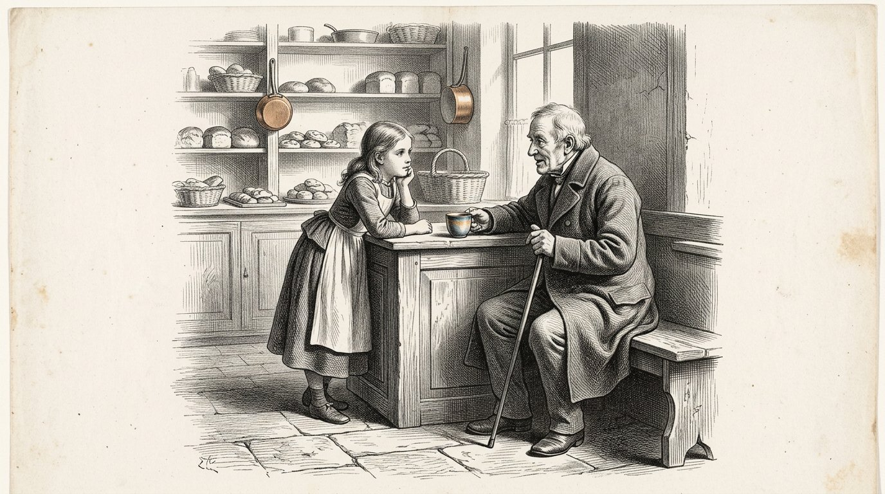
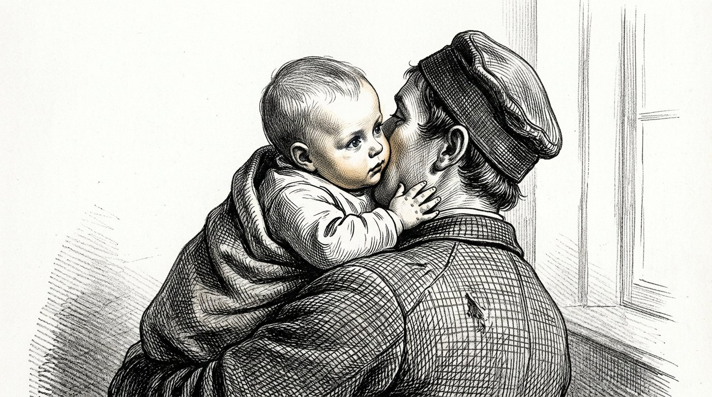
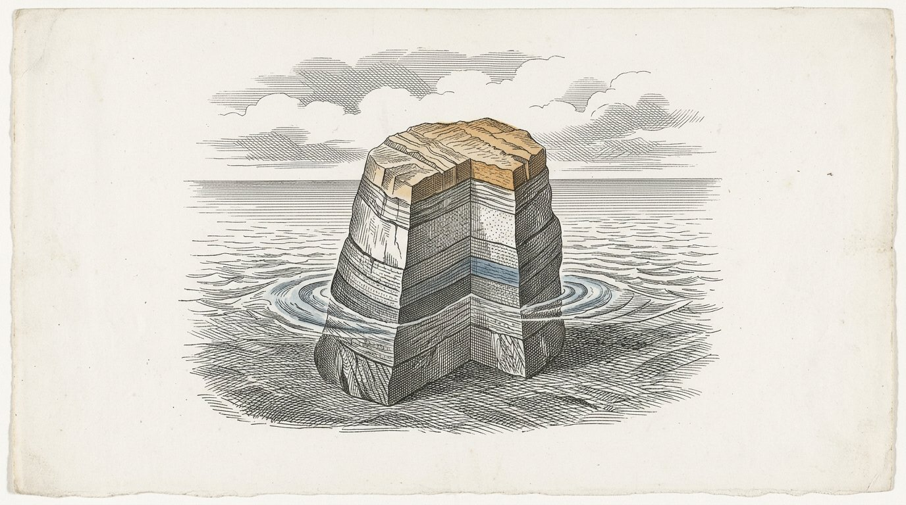
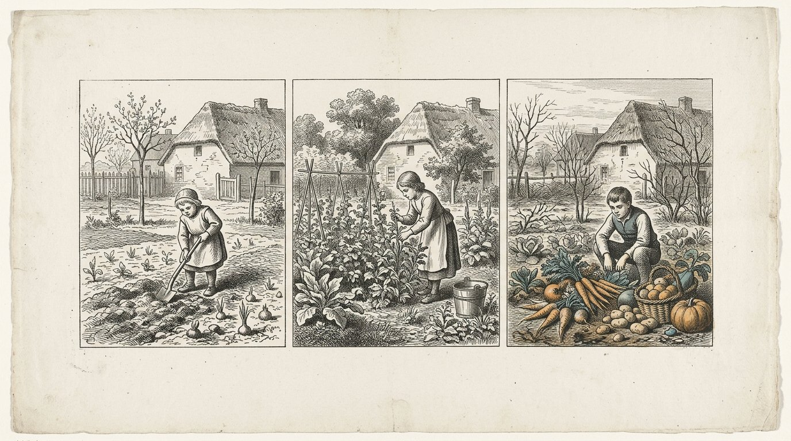
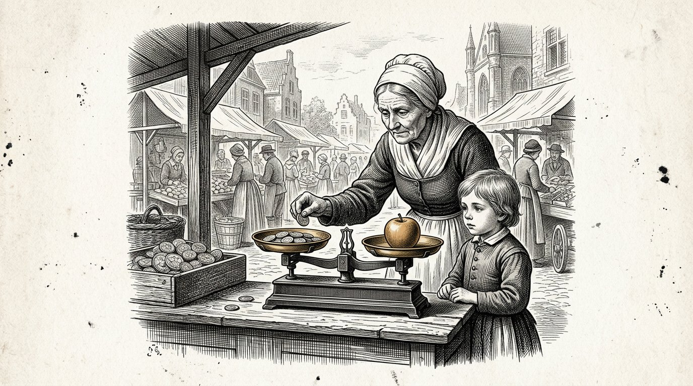
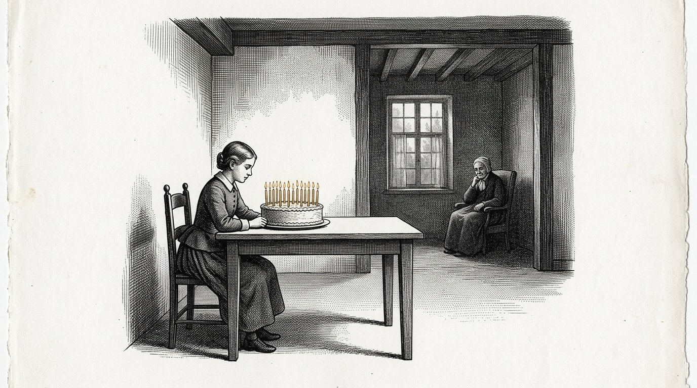
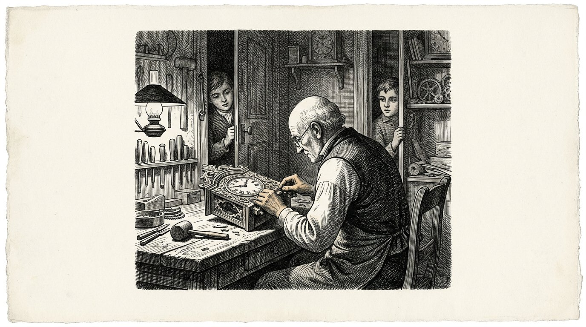
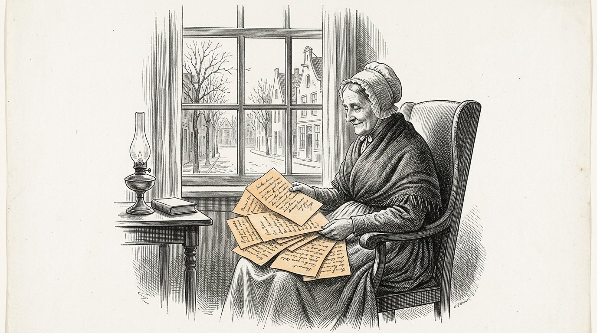

BUCH DREI
Der Kosaris
Das Buch der Anthea

BUCH DREI
Das Buch der Anthea
Dies ist das dritte Buch der Kosaris, und es wurde nicht von mir begonnen.
Es beginnt mit vierzehn Seiten, die ich schrieb, als ich zwanzig war, über meine Großmutter Demira und über den alten Mann, der donnerstags in die Bäckerei kam. Ich legte sie in eine Schublade und rührte sie zweiundfünfzig Jahre lang nicht an. Als ich sie wiederfand, erschienen sie mir zu gewiss. Ich habe nichts daran geändert. Ich habe einen Satz daruntergesetzt und das Datum dazugeschrieben.
Das erste Buch handelt von den vier Säulen. Das zweite Buch handelt von der Unterscheidung zwischen dem, was feststeht, und dem, was angenommen wird. Dieses Buch handelt von der Frage, die darunterliegt: Wie wird ein Mensch so großgezogen, dass er dies tragen kann?
Ein Mensch ist kein einstufiges Wesen. Er ist eine Schichtung von Lagen, in der Reihenfolge, in der sie entstanden sind, und jede Lage kann nur entstehen, wenn die darunterliegende erstarrt ist. Dieses Buch folgt dieser Reihenfolge und überspringt nichts.
Sieben Tage. So lange dauert es, bis das Ei weiß, dass es weitergeht. In diesen Tagen kommt nichts hinein. Es wird nur Form geschaffen.
Sieben Monate. Das Reptil. Das Kind lebt in zwei Dimensionen. Das ist keine Metapher: Ein Fisch und eine Eidechse haben ihre Augen an den Seiten und sehen ringsum, aber ihre beiden Augen arbeiten nicht zusammen, und es gibt keine Tiefe. Flach und alles zugleich. In diesen Monaten lernt das Kind, seine Lebensfunktionen selbstständig zu steuern: zu atmen, warm zu bleiben, Gefahr zu vermeiden. Keine Bindung, keine Empathie, keine Selbsterkenntnis — wohl aber intakt und zuverlässig auf seiner eigenen Ebene. Nach sieben Monaten ist diese Lage abgeschlossen, und doch wird ein Kind meist erst um den neunten Monat herum geboren. In diesen zwei Monaten kommt nichts Neues hinzu. Die Lage wird fest. Eine Lage ist nicht fertig, wenn sie funktioniert; sie ist fertig, wenn sie durchhält.
Sieben Jahre. Das Säugetier. Die Augen rücken nach vorn, die beiden Bilder beginnen zusammenzuarbeiten, und daraus entsteht Tiefe — die dritte Dimension. Und mit der Tiefe kommt das Gefühl. Es erstarrt weder als Regel noch als Wissen, sondern als gelebte Selbstverständlichkeit, und es erstarrt nur bei einem einzigen anwesenden Menschen, der über Jahre hinweg da ist. Was hier nicht erstarrt, erstarrt später nirgends mehr.
Was in diesen sieben Jahren noch nicht dazugehört, ist die Zeit. Ein Säugetier hat Zeitreflexe — einen Rhythmus, der wiederkehrt, Hunger zu einer festen Stunde, einen Hund, der rechtzeitig an der Tür steht —, aber es kann nicht planen. Es kann nicht wissen, dass morgen anders sein wird. Deshalb sollten diese sieben Jahre ohne Zeitbewusstsein verstreichen: keine Uhr, kein Kalender, kein Später, kein Ziel in fünf Jahren. Was in diesen Jahren angelegt werden muss, ist ein reflexhafter Grund ohne Zeit, und den gibt es nur, wenn wir die Zeit daraus heraushalten.
Danach der Mensch. Erst jetzt kommt die vierte Dimension hinzu: die Zeit. Das Kind kann vorausdenken auf einen Tag, den es noch nicht gibt, und schon jetzt etwas dafür tun. Von diesem Augenblick an darf alles hinein, was wir sieben Jahre lang ferngehalten haben, und es findet leicht Eingang, denn es gibt etwas, worauf es gelegt werden kann. Gefühl und Verstand laufen dann nebeneinanderher, bis vierzehn und bis einundzwanzig. Mit vierzehn öffnet sich die Fähigkeit, das eigene Denken zu betrachten. Mit einundzwanzig kann der Verstand übernehmen — aber nur, soweit darunter eine ausreichende Gefühlsgrundlage liegt, die ihn tragen kann.
Aber ein Mensch hat mehr als vier Richtungen. Es sind sieben: die drei des Raumes, die Zeit und dann noch Größe, Wert und Anzahl. Größe bedeutet zu wissen, wie groß etwas ist, und nicht nur ausrechnen zu können, wie groß etwas ist. Wert bedeutet, was etwas wert ist, unabhängig davon, ob jemand es misst. Anzahl bedeutet fühlen zu können, dass ein einzelner Fall noch nichts ist und dass tausend Fälle etwas sind.
Diese letzten drei werden in unserer Ausbildung nicht angelegt. Sie werden weggenommen. Eine Schule führt alles auf ein einziges Maß zurück, sie nennt das Wert, was in das Zeugnis passt, und sie lehrt, mit Zahlen zu rechnen, ohne jemals ein Gefühl dafür zu vermitteln. Ein Kind kommt mit vier Richtungen daraus hervor und glaubt, das sei alles.
Diese letzte Voraussetzung ist der Grund, warum dieses Buch existiert. Ein Verstand ohne eine Gefühlsgrundlage darunter übernimmt nicht. Er bewegt sich mit demjenigen, der zuletzt zu ihm gesprochen hat.
Heutzutage liegt die zweite Linie sehr viel später im Leben, und bei vielen kommt sie gar nicht. Das liegt nicht daran, dass man weniger lernt. Es liegt daran, dass man die Jahre, in denen ein Mensch danebengreifen soll, mit Lernen angefüllt hat und dass die Gefühlsgrundlage fehlt, auf der dieses Danebengreifen ankommen kann. Wer zu wenige Fehler gemacht hat, hat nichts, worüber er urteilen kann.
Siebenundsiebzig. Das ist kein Alter, in dem ein Mensch etwas lernt. Es ist die Zeit, die vergeht, bevor das, was ein Mensch gelernt hat, in jemandem wiederkehrt, der ihn nicht gekannt hat.
Ich bin sechsundvierzig Jahre lang Krankenschwester gewesen. Ich habe hundertneunzehn Kinder zur Welt kommen sehen und keines von ihnen großgezogen. Das ist ein Mangel dieses Buches, und ich sage es lieber im Voraus, als dass es jemand im Nachhinein entdeckt.
Wo ich etwas nicht weiß, steht es dabei.
Teil 1

Worin steht, was Anthea mit zwanzig über ihre Großmutter und über den alten Mann niederschrieb und was sie zweiundfünfzig Jahre später daruntersetzte.

Ich sah Farben um Menschen. Das habe ich lange niemandem gesagt, denn meine Mutter wurde davon beunruhigt und meine Großmutter nicht, und bei meiner Großmutter zu sein war leichter.
Ich weiß nicht, was es war. Später habe ich darüber studiert, und ich habe nie einen Namen dafür gefunden, der stimmte. Die Ärzte haben Namen dafür, und diese Namen decken es nicht ab.
Was ich allerdings weiß, ist, wann es weggegangen ist. Es ist weggegangen, als ich vierzehn war, in dem Winter, in dem mein Großvater starb, und es ist nie zurückgekommen.
Dreißig Jahre lang habe ich darunter gelitten.
Jetzt bin ich alt, und jetzt denke ich anders darüber. Ich glaube nicht mehr, dass ich etwas verloren habe. Ich glaube, dass etwas hinzugekommen ist.
Etwas kam hinzu, das sich ansah, was ich sah, und fragte, ob es denn wahr sei.
Dieses Ding ist nie wieder weggegangen. Es ist noch immer da, sieht sich in diesem Augenblick diesen Satz an und fragt, ob ich das überhaupt weiß.
Ich weiß es nicht sicher.
Aber ich habe in fünfzig Jahren bei fünfzehn Kindern dasselbe geschehen sehen, ungefähr im gleichen Alter, und das ist kein Beweis, aber es ist auch nicht nichts.
Anthea schreibt:Etwas kommt hinzu, das schaut. Das ist nicht das Ende des Kindes. Das ist die zweite Schicht, die sich öffnet.

Meine Großmutter wog jeden Mehlsack. Ich habe sie das fünftausendmal tun sehen, und ich habe nie so darauf geschaut, wie man auf etwas Besonderes schaut, denn so ist es, wenn man klein ist.
Ich dachte, das Wiegen gehöre zum Backen.
Sie hat mir nie erklärt, warum sie es tat. Sie hat mir nie gesagt, dass es wichtig sei oder dass ich es mir merken müsse.
Sie wog, und ich stand daneben.
Als ich siebzehn war und in der Klinik anfing, zählte ich an meinem ersten Tag die Fläschchen im Schrank nach, und die Krankenschwester fragte, warum ich das tat, und ich sagte, dass ich es nicht wisse.
Ich wusste es nicht.
Erst viel später fand ich heraus, dass ich es aus der Bäckerei hatte.
Was ich daraus gelernt habe, ist das Unangenehmste in diesem ganzen Buch: Das Wichtigste, was meine Großmutter mich gelehrt hat, hat sie mich nie gelehrt.
Sie hat es getan, während ich dabei war.
Alles, was sie mir tatsächlich in Worten erklärt hatte, mit der Absicht, dass ich es mir merken sollte, habe ich vergessen.
Anthea schreibt:Ein Kind übernimmt nicht, was Sie sagen. Es übernimmt, was Sie tun, während Sie etwas anderes sagen.

Der alte Mann kam donnerstags in die Bäckerei, und ich war oft dort, weil ich gern dort war.
Er fragte immer dasselbe, und er fragte es immer anders.
Er fragte nie, was ich wusste. Er fragte, woher ich es wusste.
Als ich acht war, fand ich das lästig, denn ich wollte erzählen, was ich wusste, und das war viel.
Als ich elf war, begann ich, mir vorher zu überlegen, was ich antworten würde, wenn er fragte, und dadurch sah ich anders auf das, was ich sah.
Das war es, was er tat. Er hat mich nie etwas gelehrt. Drei Jahre lang stellte er mir dieselbe Frage, bis ich sie selbst zu stellen begann, bevor er hereinkam.
Und dann hörte er damit auf.
Ich habe ihn später danach gefragt, als ich neunzehn war. Ich fragte, warum er damit aufgehört hatte.
Er sagte: „Weil du ihn jetzt selbst hast.“
Ich sagte damals, dass er es hätte sagen können. Das hätte viel Zeit erspart.
Er sagte, das stimme nicht, und er hatte recht, und es hat mich noch einmal zwanzig Jahre gekostet, zu verstehen, warum.
Eine Frage, die man gestellt bekommt, kann man beantworten.
Eine Frage, die man selbst stellt, kann man nicht mehr beiseitelegen.
Anthea schreibt:Lehre das Kind nicht die Antwort. Stelle die Frage so oft, dass das Kind sie übernimmt.
Teil II
Teil 2

Worin nichts eintritt und nur die Form errichtet wird, in die später etwas kommen kann.

Es vergehen sieben Tage, bevor sich eine befruchtete Eizelle einnistet.
Sieben Tage, in denen sie unterwegs ist und in denen, soweit wir es sehen können, nichts geschieht, was es wert wäre, benannt zu werden.
Nichts kommt hinzu. Nichts wird versorgt. Es gibt keine Verbindung zur Mutter, und die Mutter weiß von nichts.
Es wird nur Form geschaffen.
Ich habe das nie mit eigenen Augen gesehen, und ich werde es auch nie sehen. Ich weiß es aus Büchern, und ich sage das dazu, denn in diesem Buch steht ansonsten fast alles, was ich selbst beobachtet habe.
Dennoch schreibe ich es auf, und zwar aus diesem Grund.
Ich habe in der Klinik hundertmal gesehen, wie Menschen in einer Phase ungeduldig werden, in der nichts geschieht. Sie wollen, dass etwas eintritt. Sie wollen ernähren, sprechen, lehren, berühren.
Und die erste Woche eines Menschen ist eine Woche, in der nichts eintritt und die einzige Arbeit darin besteht, die Form aufzubauen, in die später etwas kommen kann.
Wer in dieser Woche schon etwas geben will, gibt es etwas, das noch nicht da ist.
So ist es am Anfang, und so ist es in jeder Phase danach.
Anthea schreibt:Bevor das Leben beginnen kann, muss die Form da sein. In dieser Woche geschieht nichts, und dieses Nichts ist die Arbeit.

Es gab zwei Häuser in derselben Straße, in denen im selben Jahr ein Kind erwartet wurde.
Im einen Haus wurde alles vorbereitet. Eine Wiege wurde angeschafft, Kleidung und Decken kamen hinzu, und alles lag gebügelt in einem Schrank.
Im anderen Haus kam all das ebenfalls, und daneben geschah noch etwas, das niemand bemerkte.
Die Frau dort hatte begonnen, zu festen Zeiten zu essen. Sie ging zu Bett, wenn es dunkel wurde, und stand auf, wenn es hell wurde, und sie tat das bereits vier Monate, bevor das Kind da war.
Sie tat das nicht für das Kind. Sie tat es, weil sie schlecht schlief und weil jemand ihr gesagt hatte, dass es helfe.
Ich habe diese beiden Kinder bis zu ihrem zweiten Lebensjahr begleitet.
Das zweite Kind schlief. Das erste nicht.
Ich weiß nicht, ob es daran lag. Zwischen diesen beiden Häusern gab es noch zehn weitere Unterschiede, und ich habe keinen davon gemessen.
Aber seither habe ich jeder Frau, die es hören wollte, dasselbe gesagt, und ich sage es auch hier:
Der Rhythmus eines Hauses muss vorhanden sein, bevor das Kind da ist.
Eine Uhr, die erst zu ticken beginnt, wenn es etwas zu messen gibt, ist keine Uhr. Das ist eine Reaktion.
Anthea schreibt:Richte den Rhythmus ein, bevor das Kind da ist. Eine Uhr, die erst zu ticken beginnt, wenn es etwas zu messen gibt, ist keine Uhr.

In jedem Haus gibt es jemanden, der entscheidet, was hineinkommt.
Das ist meistens niemand Bestimmtes, und es wird nie abgesprochen. Es ist der Mensch, der sagt: Das tun wir hier nicht, oder: Lass es nur herein, oder: Dieser Mann kommt nicht herein.
Ich habe gesehen, was geschieht, wenn das niemand ist.
Es gab eine Familie, bei der jeder willkommen war und alles hineinkam. Es kamen Nachbarn, es kamen Geschichten, es kam ein Radio, und später kam alles Mögliche auf einem Bildschirm, und es gab nie jemanden, der sagte, dass etwas nicht hineingehörte.
Das wurde gelobt. Man nannte es ein offenes Haus.
Die Kinder dort wuchsen mit allem auf.
Was sie nicht hatten, war ein einziger Mensch, der gelegentlich etwas zurückhielt.
Es geht nicht darum, dass viel zurückgehalten wird. In jenem Haus war beinahe nichts wirklich schädlich.
Es geht darum, dass ein Kind erlebt, dass jemand an der Tür steht.
Wer das nie erlebt hat, baut selbst auch keine.
Mit dreißig steht er allem offen, was vorbeikommt, und nennt das Aufgeschlossenheit, und er hat es nie gewählt.
Anthea schreibt:Jemand muss an der Tür stehen, bevor etwas an die Tür kommt. Ein Kind, das das nie gesehen hat, baut selbst keine Tür.
Teil III
Teil 3

Worin flach und ringsum geblickt wird und die Lebensfunktionen angelegt werden — atmen, warm bleiben, Gefahr vermeiden — und sich zeigt, dass eine Schicht erst fertig ist, wenn sie durchhält.

Sieh einen Fisch an.
Seine Augen stehen seitlich an seinem Kopf. Er sieht nach links und nach rechts und ungefähr alles um sich herum zugleich. Es gibt beinahe keinen Ort, an dem man sich ihm nähern kann, ohne dass er es bemerkt.
Das scheint besser zu sein als das, was wir haben, und in einer Hinsicht ist es das auch.
Aber er sieht flach.
Seine beiden Augen arbeiten nicht zusammen. Sie schauen jeweils in ihre eigene Richtung, und in ihm gibt es nichts, was die beiden Bilder zur Deckung bringt. Deshalb weiß er nicht, wie weit etwas entfernt ist. Er weiß, dass da etwas ist und ungefähr, wo es sich befindet, mehr nicht.
Eine Eidechse hat dasselbe.
Das ist es, was ich in diesem Buch die zwei Dimensionen nenne. Keine Idee – eine Art zu sehen. Ringsum, flach, alles zugleich, keine Tiefe.
Für das, was diese Tiere tun müssen, reicht es. Zum Fliehen braucht man keine Tiefe. Zum Fliehen muss man nur wissen, dass da etwas ist.
Ein Kind im Mutterleib braucht diese Tiefe ebenfalls nicht, denn nichts ist weit entfernt.
Alles, was da ist, berührt es.
Anthea schreibt:Zwei Dimensionen sind keine Idee, sondern eine Art zu sehen: ringsum, flach, alles zugleich, keine Tiefe. Zum Fliehen reicht das.

Ein Kind übt das Atmen Monate, bevor es Luft gibt.
Es vollzieht die Bewegung in der Flüssigkeit, in der es liegt. Es nimmt nichts auf, denn es gibt nichts aufzunehmen. Es vollzieht nur die Bewegung, tausendfach, ohne dass sie zu etwas führt.
Ich habe das bei einer Frau im siebten Monat mit meiner Hand gespürt. Eine Reihe kurzer Stöße, vier oder fünf hintereinander, und dann Stille.
Sie dachte, es sei Schluckauf, und das ist es auch, mehr oder weniger, und zugleich ist es etwas anderes.
Es ist ein Wesen, das eine Handlung einübt, für die die Welt noch nicht existiert.
Wenn das Kind geboren wird, muss es innerhalb weniger Sekunden atmen. Dann bleibt keine Zeit zum Lernen. Es gibt keinen ersten Versuch.
Alles, was dann geschehen muss, ist sieben Monate lang im Dunkeln geübt worden.
Ein Reptil lebt in zwei Richtungen. Es bewegt sich vorwärts und seitwärts und hält sich an die Oberfläche, auf der es liegt. Es klettert nicht und springt nicht und hat kein Verständnis von oben.
So liegt auch ein Kind in diesen Monaten. Es dreht und schiebt sich, aber es gibt kein Oben und kein Unten, denn es treibt.
Das ist der Grund, weshalb ich in diesem Buch das Reptil die erste Schicht nenne und nicht die unterste.
In einem Menschen gibt es einen Teil, der sich selbst in Ordnung bringt, ohne dass jemand dabei ist und ohne dass es von einem anderen etwas zu lernen gibt.
Dieser Teil braucht keine Liebe und keine Worte und keine Ermutigung.
Er braucht Ruhe und er braucht Zeit, und er ist der einzige Teil eines Menschen, der fertig ist, bevor er geboren wird.
Anthea schreibt:Die erste Schicht übt im Dunkeln eine Handlung ein, für die die Welt noch nicht existiert. Diese Schicht braucht keine Liebe. Sie braucht Ruhe.

Ein Kind im Mutterleib ist immer gleich warm.
Es regelt das nicht selbst. Es erhält die Wärme von der Mutter und muss dafür nichts tun, und so bleibt es sieben Monate lang.
Und dann wird es geboren, und innerhalb einer Stunde muss es damit beginnen, dies selbst zu tun.
Das ist der schwerste Übergang im Leben eines Menschen, und er dauert ungefähr einen Tag.
Ich habe Kinder gesehen, die das sofort konnten, und Kinder, die es nicht konnten, und der Unterschied liegt nicht in der Liebe, die sie erhielten.
Das ist der Grund, weshalb wir ein Neugeborenes an seine Mutter legen und nicht in ein Bettchen. Nicht aus Zärtlichkeit. Weil ein Körper einen Körper warmhält, während dieser Körper lernt, es selbst zu tun.
Was ich daraus gelernt habe, gilt nicht nur für Wärme.
Es gibt Dinge, die ein Mensch zuerst von einem anderen erhält und die er danach selbst herstellen muss.
Wenn er sie zu früh selbst herstellen muss, geht es schief. Wenn er sie zu lange von einem anderen erhält, lernt er es nie.
Bei der Wärme ist das eine Frage von Stunden, und wir können es sehen.
Bei allem, was danach kommt, dauert es Jahre, und wir sehen es nicht.
Anthea schreibt:Was ein Mensch zuerst von einem anderen erhält, muss er danach selbst herstellen. Zu früh geht es schief, zu spät lernt er es nie.

Es fiel eine Klappe in der Klinik zu, und eine hochschwangere Frau erschrak.
Und unter ihrer Hand erschrak das Kind mit.
Sie spürte es, sah mich an und sagte: "Er hat das gehört."
Ich sagte damals, dass er es nicht so gehört habe, wie wir hören, und das sagt man eben, und ich weiß nun nicht mehr, ob es stimmte.
Was jedenfalls geschah, war dies: Es gab einen harten Reiz, und darauf folgte ein Zurückweichen, und dazwischen lag nichts.
Kein Gedanke. Keine Abwägung. Keine Frage, ob es gefährlich war.
Das ist die dritte Lebensfunktion und sie ist die wichtigste von den dreien, denn Atmen und Warmbleiben halten ein Wesen am Leben, und Gefahr zu vermeiden hält es unversehrt.
Ich habe in meinem Leben drei Menschen gekannt, bei denen dieser Reflex nicht richtig funktionierte.
Sie waren nicht mutig. Mut ist etwas anderes; Mut bedeutet, Angst zu haben und trotzdem weiterzugehen. Sie hatten keine Angst.
Alle drei starben früh, und von keinem kann ich sagen, dass es an jenem einen lag.
Aber ich schreibe es auf, weil wir heutzutage große Anstrengungen unternehmen, damit Kinder sich nicht erschrecken.
Der Schreck ist kein Schaden.
Der Schreck ist die älteste Schicht, die es gibt, und er war da, bevor es irgendetwas anderes gab.
Anthea schreibt:Gefahr zu vermeiden ist weder Angst noch Schwäche. Es ist die älteste Schicht, und sie war da, bevor es irgendetwas anderes gab.

Nach sieben Monaten ist das Reptil fertig.
Alles, was ein Körper braucht, um sich selbst zu steuern, ist dann vorhanden. Atmen, Wärme, Erschrecken. Ein Kind, das im siebten Monat geboren wird, kann am Leben bleiben, und das ist kein Wunder, sondern das gewöhnliche Ergebnis einer fertigen Schicht.
Und doch wird ein Kind meistens erst zwei Monate später geboren.
Ich habe mich lange darüber gewundert, und ich bin zu keiner Lösung gekommen.
Was ich gesehen habe, ist dies. In diesen zwei Monaten kommt nichts Neues hinzu. Es wird keine neue Funktion angelegt. Das Kind wird schwerer, seine Haut wird dicker und seine Lungen werden weiter, und das ist beinahe alles.
Die Schicht ist fertig und sie wird fest.
Bei den Kindern, die zu früh kamen, habe ich gesehen, worin der Unterschied besteht. Sie konnten alles. Sie konnten es nur weniger lange.
Das ist die Form, in der ich es zu verstehen begonnen habe, und ich füge gleich hinzu, dass es meine eigenen Worte sind und nicht die eines Arztes:
Eine Schicht ist nicht fertig, wenn sie funktioniert. Sie ist fertig, wenn sie durchhält.
Wer eine Phase in dem Augenblick abschließt, in dem er sieht, dass sie funktioniert, schließt sie zwei Monate zu früh ab.
Anthea schreibt:Eine Schicht ist nicht fertig, wenn sie funktioniert. Sie ist fertig, wenn sie durchhält.
Teil IV
Teil 4

Worin die dritte Richtung hinzukommt und das Gefühl erstarrt, nicht als Regel, sondern als gelebte Selbstverständlichkeit — und worin die vierte Richtung noch sieben Jahre ferngehalten wird.

Es kommt ein Tag, an dem ein Kind sich hochzieht.
Es lag, es saß, es schob sich über den Boden — und dann ergreift es die Kante eines Stuhls und kommt hoch, und es steht, und es fällt um.
Was an diesem Tag hinzukommt, ist die dritte Richtung.
Sie begann früher, und sie begann in den Augen.
Ein Säugetier hat seine Augen nach vorn gerichtet. Es sieht weniger als der Fisch — hinter ihm liegt eine ganze Welt, die es nicht sieht und derentwegen es sich umdrehen muss.
Was es dafür zurückbekommt, ist, dass seine beiden Augen dasselbe Ding von zwei Orten aus sehen und dass etwas in ihm diese beiden Bilder übereinanderlegt.
Daraus entsteht Tiefe.
Von diesem Augenblick an gibt es nicht nur, dass etwas da ist, sondern auch, wie weit es entfernt ist. Es gibt Greifen. Es gibt zu weit. Es gibt beinahe.
Ein Neugeborenes hat das noch nicht. Es dauert Monate, bis seine Augen lernen zusammenzuarbeiten, und das geschieht von selbst, und niemand sieht es geschehen.
Solange ein Kind auf dem Boden ist, lebt es, wie das Reptil lebte: vorwärts und seitwärts. Es gibt kein Oben, das es selbst erreichen kann.
Sobald es steht, gibt es Höhe. Es gibt etwas, das zu weit entfernt ist, um es zu greifen. Es gibt einen Tisch, auf dem etwas liegt. Es gibt Fallen.
Und damit kommt etwas anderes hinzu, das im selben Augenblick beginnt und das niemand mit der dritten Richtung in Verbindung bringt.
Das Kind schaut sich um.
Es zieht sich hoch, es steht, und dann dreht es den Kopf um zu sehen, ob jemand es gesehen hat.
Ich habe das bei sehr vielen Kindern gesehen, und es geschieht immer in derselben Woche wie das Stehen.
Das Säugetier kommt nicht von der Räumlichkeit los. Es kommt mit der Räumlichkeit mit.
Wer Höhe hat, kann fallen. Wer fallen kann, braucht jemanden, der hinsieht.
Anthea schreibt:Mit der dritten Richtung kommt das Säugetier. Wer Höhe hat, kann fallen, und wer fallen kann, sieht sich um, ob jemand mit hinsieht.

Ich habe in sechsundvierzig Jahren einhundertneunzehn Kinder geboren gesehen.
Ein Neugeborenes tut in der ersten Woche vier Dinge. Es atmet, es trinkt, es schläft und es schreit.
Das ist alles. Es scheint wenig, und es ist beinahe alles, was in einem Menschenleben festgelegt wird.
Denn was in dieser Woche geschieht, ist nicht, dass das Kind etwas lernt. Es ist, dass der Körper feststellt, in was für eine Welt er geraten ist.
Kommt jemand, wenn ich schreie, oder nicht.
Mehr ist es nicht. Es ist eine einzige Frage, und die Antwort kommt nicht in Worten, sondern darin, wie schnell jemand kommt.
Ich habe Kinder gesehen, bei denen immer jemand kam, und Kinder, bei denen meistens jemand kam, und Kinder, bei denen es wechselte.
Das Wechseln ist das Schlimmste. Das weiß ich nicht aus einem Buch, das weiß ich vom Beobachten, und ich sage gleich dazu, dass ich es nicht gemessen habe und es deshalb nicht sicher weiß.
Aber ich habe es zu oft gesehen, um es nicht aufzuschreiben.
Ein Kind hält wenig aus. Ein Kind hält Unvorhersehbares nicht aus.
Anthea schreibt:In der ersten Woche lernt ein Mensch nichts. In der ersten Woche wird festgelegt, ob die Welt antwortet.

Es gab ein Kind, das fünf Betreuungspersonen hatte. Das geschah nicht aus Gleichgültigkeit. Die Mutter arbeitete, der Vater arbeitete, und es gab zwei Großmütter und eine Nachbarin, und sie taten es alle gern.
Dem Kind ging es gut. Es wurde nie allein gelassen, ihm fehlte es an nichts, und immer war jemand da, der kam.
Ich habe dieses Kind beobachtet, weil es wegen etwas an seinem Ohr in unsere Klinik kam.
Was mir auffiel, fiel mir erst nach einem Jahr auf.
Wenn das Kind unruhig wurde, sagte die Mutter: Du bist müde. Die eine Großmutter sagte: Du hast Hunger. Die andere sagte: Du bist ungeduldig. Die Nachbarin sagte: Du willst nach draußen.
Alle fünf hatten es lieb, und alle fünf hatten manchmal recht.
Aber das Kind bekam fünf Namen für ein einziges Gefühl in seinem Körper.
Ein Kind weiß nicht von selbst, was Hunger ist. Es fühlt etwas Unangenehmes. Erst dadurch, dass jemand bei demselben Gefühl immer wieder dasselbe sagt, lernt es, was das ist.
Dieses Kind hat das nicht gelernt. Es hat zu raten begonnen.
Es ist ein nettes Kind geworden und ein guter Schüler, und es ist niemals wegen irgendetwas behandelt worden.
Mit neunzehn sagte es zu mir, in derselben Klinik, auf demselben Stuhl: "Ich weiß nie, was ich fühle."
Anthea schreibt:Ein Kind lernt nicht aus dem Hunger, was Hunger ist. Es lernt es dadurch, dass immer wieder derselbe Mensch dasselbe Wort zu demselben Gefühl sagt.

Ein fünf Monate altes Kind versteht kein Wort.
Es liest ein Gesicht schneller, als Sie es aufsetzen können.
Ich habe das hundertmal überprüft, weil ich es zunächst nicht glaubte. Ich setzte mich zu einer Mutter und ließ sie etwas Freundliches sagen, während sie an etwas Unangenehmes dachte.
Das Kind wusste es. Jedes Mal.
Nicht weil es klug ist. Weil es nichts anderes hat. Es hat keine Worte, also hat es nur das Gesicht, und es betrachtet dieses Gesicht, wie Sie einen Wetterbericht ansehen, wenn Sie aufs Meer hinausmüssen.
Deshalb funktioniert es nicht, einem Baby gegenüber fröhlich zu tun, wenn Sie es nicht sind.
Was funktioniert, und das ist das Seltsame, ist, einfach da zu sein, während Sie es nicht sind.
Ich hatte eine Mutter, die ihren Mann verloren hatte, als das Kind drei Monate alt war. Sie konnte nicht fröhlich sein und gab sich keine Mühe mehr, es so wirken zu lassen.
Sie war einfach da. Jeden Tag, stundenlang, traurig und anwesend.
Dieses Kind ist gut zurechtgekommen.
Ein Kind kann Traurigkeit aushalten, die da ist. Ein Kind kann ein Gesicht nicht aushalten, das etwas anderes sagt als das, was es fühlt, denn dann stimmt die Welt nicht, und es kann noch nicht fragen, wie das kommt.
Anthea schreibt:Tun Sie nicht so. Das Kind liest Sie, bevor Sie sprechen können.

Es kommt ein Tag, an dem ein Kind Sie ansieht, dann etwas anderes und dann wieder Sie, um zu sehen, was Sie davon halten.
Das ist neu. Im Monat zuvor konnte es das noch nicht.
Von diesem Augenblick an beschäftigt sich das Kind nicht mehr nur damit, was geschieht, sondern auch damit, was Sie davon halten, was geschieht.
Das ist der Anfang von allem, was später Gefühl heißen wird, und zugleich der Anfang von allem, was später schiefgeht.
Denn von nun an übernimmt es.
Haben Sie Angst vor Hunden, dann hat das Kind in drei Jahren Angst vor Hunden, und Sie haben ihm nie etwas über Hunde erzählt.
Ich konnte das bei vier Familien verfolgen, weil ich lange genug bei ihnen gewesen bin.
Es geschieht nicht durch Worte. Es geschieht in jenem einen Augenblick, in dem das Kind zu Ihrem Gesicht zurückblickt und sieht, was darin steht.
Deshalb ist dies die schwerste Zeit des ganzen Lebens, Erzieher zu sein.
Es gibt nichts zu tun. Man kann nur etwas sein.
Anthea schreibt:Sobald das Kind zurückblickt, um zu sehen, was Sie davon halten, geben Sie weiter, was Sie sind, und nicht, was Sie sagen.

Es gab einen Hund im Hafen, der jeden Nachmittag um zehn vor vier bei der Schule stand.
Man sagte, er könne die Uhr lesen, und das ist Unsinn, aber er war trotzdem jeden Tag dort und nie zu spät.
Ich habe einmal darauf geachtet, was er tat, bevor er ging.
Er lag bei den Netzen. Irgendwann stand er auf und ging.
Am Hafen hatte sich nichts verändert. Es gab keine Glocke, keinen Menschen, der aufbrach, nichts zu sehen.
Er wusste es in seinem Leib.
Und doch kann dieses Tier nicht planen.
Wenn man ihm am Mittwoch hätte begreiflich machen wollen, dass die Schule am Donnerstag geschlossen sein würde, wäre das unmöglich gewesen. Nicht schwierig. Unmöglich.
Er ging am Donnerstag, stand vor einer verschlossenen Tür, und am darauffolgenden Freitag ging er wieder.
Das ist der Unterschied, und es ist ein größerer Unterschied, als es scheint.
Ein Rhythmus im Leib ist keine Zeit. Es ist ein Reflex, der wiederkehrt.
Zeit ist etwas anderes. Zeit bedeutet zu wissen, dass morgen anders sein wird als heute, und jetzt schon etwas damit zu tun.
Das kann ein Säugetier nicht, und ein vierjähriges Kind auch nicht.
Anthea schreibt:Ein Rhythmus im Leib ist keine Zeit. Es ist ein Reflex, der wiederkehrt. Zeit bedeutet zu wissen, dass morgen anders sein wird.

Es gibt ein Wort, an das ich mich in der Klinik nie gewöhnt habe, und das ist später.
Eine Mutter sagt zu einem vierjährigen Kind: später.
Sie meint es gut. Sie meint: nicht jetzt, aber es kommt.
Das Kind hört nicht, was sie meint, denn um zu hören, was sie meint, muss man sich ein Morgen vorstellen können, und das kann es noch nicht.
Was das Kind hört, ist nein.
Und weil es nein hört, während die Mutter ja meint, stimmt etwas nicht, und das Kind kann nicht sagen, was.
Ich habe das hundertmal geschehen sehen und hundertmal nichts dazu gesagt, denn was soll ein Mensch dann sagen.
Was ich sehr wohl gesehen habe, ist, was bei Menschen geschieht, die es anders machen.
Sie sagen nicht später. Sie sagen: zuerst dies, dann das. Und dann tun sie zuerst das eine, während das Kind dabei ist, und danach das andere.
Das Kind muss dann nichts überbrücken. Es muss nur zusehen.
Das kostet den Eltern mehr Zeit. Das ist der ganze Preis.
Wir haben dieses Wort erfunden, um diesen Preis nicht zu bezahlen.
Anthea schreibt:Ein vierjähriges Kind hört im Wort später kein Versprechen. Es hört nein. Sag: zuerst dies, dann das, und tu es, während es dabei ist.
Teil V
Teil 5

Worin die vier Säulen nicht gelehrt, sondern erlebt werden, worin die unterste Schicht gelegt wird, die sich danach nicht mehr öffnet, und worin sich zeigt, dass ein Elternteil es nicht allein vermag — denn ein Elternteil tritt beiseite, und ein anderes sechsjähriges Kind tritt nicht beiseite.

Ich habe Folgendes dreimal erlebt, und es ist der Grund, warum ich dieses Buch zu schreiben begonnen habe.
Es kommen Menschen in die Klinik, die alles können. Sie sind klug, sie sind fleißig, sie sind nicht boshaft.
Und tief in ihnen stimmt etwas nicht, und nichts, was du tust, dringt dorthin vor.
Du kannst mit ihnen sprechen, und sie verstehen alles, was du sagst. Sie können es wiedergeben. Sie stimmen dir zu.
Und es verändert sich nicht.
Ich habe lange gebraucht, um anzunehmen, dass es etwas gibt, das man mit Worten nicht erreicht.
Die oberste Schicht eines Menschen verändert sich in einem Gespräch. Die mittlere Schicht verändert sich in einem oder zehn Jahren.
Die unterste Schicht ist die Schicht, die in den ersten sieben Jahren gelegt wird, und sie verändert sich nicht mehr. Nicht durch Reden, nicht durch Lernen, nicht durch Wollen.
Ich schreibe dies nicht auf, um jemanden als hoffnungslos zu bezeichnen. Ein Mensch mit einer schiefen Grundschicht kann ein gutes und glückliches Leben führen, und ich habe viele solcher Menschen gekannt.
Ich schreibe es auf, weil es bedeutet, dass die ersten sieben Jahre nicht eine von mehreren Phasen sind.
Sie sind die einzige Phase, in der man die unterste Schicht erreichen kann.
Anthea schreibt:Die oberste Schicht verändert sich in einem Gespräch. Die unterste Schicht verändert sich in sieben Jahren, und danach nie wieder.

Ich habe einmal einen Bauern sagen hören, dass man ein Ackerfeld einmal im Leben anlegt und es danach zweihundertmal bearbeitet.
So ist es mit einem Kind.
In den ersten sieben Jahren legst du den Grund. Danach bearbeitest du ihn.
Was in diesen sieben Jahren hineingeht, ist kein Wissen. Wissen kommt später, und Wissen kommt leicht.
Was hineingeht, sind vier Dinge, und ich nenne sie so, wie ich sie in der Klinik zu nennen begonnen habe.
Das Erste ist: Wenn ich rufe, kommt jemand.
Das Zweite ist: Was gesagt wird, stimmt mit dem überein, was geschieht.
Das Dritte ist: Ich darf etwas kaputtmachen, und trotzdem bin ich noch willkommen.
Das Vierte ist: Jemand hält mich für wert, mir Zeit zu widmen, auch wenn dabei nichts herauskommt.
Das sind die vier Säulen, aber so, wie ein dreijähriges Kind sie erlebt. Das Kind kennt die Worte nicht, und es wird sie auf diese Weise niemals kennen.
Es weiß nur, ob es wahr war.
Anthea schreibt:Die vier Säulen werden nicht gelehrt. Sie werden in den ersten sieben Jahren erlebt — oder nicht.

Ein vierjähriges Kind zerbrach ein Glas.
Es gibt drei Möglichkeiten, wie das ausgeht, und ich habe alle drei hundertmal gesehen.
Die erste ist, dass das Kind ausgeschimpft wird. Dann lernt das Kind, dass ein Fehler gefährlich ist, und es beginnt, Fehler zu verbergen. Dieses Kind wird noch mit dreißig Jahren Fehler verbergen.
Die zweite ist, dass nichts geschieht, die Mutter das Glas aufräumt und weitermacht. Dann lernt das Kind, dass ein Fehler nichts bedeutet. Dieses Kind wird mit dreißig Jahren Unordnung hinterlassen und es nicht bemerken.
Die dritte ist, dass die Mutter sagt: Das Glas ist kaputt, wir räumen es gemeinsam auf, pass auf deine Finger auf.
Dann geschieht etwas, das in den beiden anderen Fällen nicht geschieht.
Das Kind lernt, dass ein Fehler eine Folge und keine Strafe hat, dass diese Folge zu tragen ist und dass danach wieder alles gut ist.
Das ist das ganze Geheimnis dieses Buches, und es passt in eine einzige häusliche Handlung.
Ich habe Eltern dies als Strenge bezeichnen hören. Es ist keine Strenge. Strenge ist die erste Möglichkeit.
Es heißt, das Kind die Folge tragen zu lassen.
Anthea schreibt:Strafe lehrt, etwas zu verbergen. Nichts lehrt Gleichgültigkeit. Die Folge lehrt, etwas zu tragen.

Eine junge Mutter kam in die Klinik, die alles gelesen hatte. Sie hatte drei Bücher gelesen und kannte die Schemata.
Ihr Kind weinte, und sie sah auf die Uhr.
Im Buch stand, dass ein Kind nach dem Füttern zwanzig Minuten weinen dürfe und danach von selbst einschlafe, und das stimmt, denn genau das geschieht auch.
Sie machte es nach dem Buch richtig.
Ich sagte drei Monate lang nichts dazu, denn es stand mir nicht zu.
Im vierten Monat fragte sie mich selbst, was ich davon hielt, und da sagte ich es ihr.
Ich sagte: "Sie sehen auf die Uhr. Sehen Sie das Kind an."
Sie sagte, das Buch sei von jemandem geschrieben worden, der etwas davon verstand.
Das stimmte. Das sagte ich auch.
Dann fragte ich sie, ob das Buch ihr Kind kenne.
Sie begann zu weinen, und ich blieb sitzen und sagte nichts, denn es gab nichts zu sagen. Vier Monate lang hatte sie getan, was ein vernünftiger Mensch ihr geraten hatte.
Es gibt zwei Arten von Wissen. Es gibt das Wissen darum, was im Allgemeinen gilt, und das ist echtes Wissen und viel wert.
Und es gibt das Wissen darum, wer vor einem liegt.
Das Erste kann man lesen. Für das Zweite muss man hinsehen.
Anthea schreibt:Das Buch hat recht. Das Buch kennt Ihr Kind nicht.

Hinter dem Hafen lag eine Straße, in der die Kinder spielten und kein Erwachsener dabei war.
Das war keine Entscheidung. Es war einfach so.
Dort geschahen Dinge, die zu Hause nicht geschahen. Es wurde geschubst. Man wurde ausgeschlossen. Etwas wurde weggenommen, und darüber wurde geweint.
Es dauerte meist eine halbe Stunde, dann war es vorbei, und niemand hatte vermittelt.
Später habe ich gesehen, was diese Straße bewirkte.
Zu Hause passt sich ein Elternteil an. Dafür kann er nichts, und es ist auch gut, dass er es tut. Er dämpft. Er tritt einen Schritt zur Seite, damit das Kind vorbeikommt.
Ein anderes sechsjähriges Kind tut das nicht. Es geht nicht zur Seite.
Dort lernt ein Kind, wo es selbst aufhört.
Ich weiß nicht, wie man das zu Hause nachmachen soll, und ich glaube nicht, dass es möglich ist.
Die Straße gibt es nicht mehr. Jetzt rollt dort Verkehr, die Kinder sind drinnen, und wenn sie sich sehen, ist das von zwei Müttern verabredet, die die Zeit aufeinander abgestimmt haben.
Dann wird nicht geschubst.
Anthea schreibt:Ein Elternteil tritt zur Seite. Ein anderes sechsjähriges Kind tritt nicht zur Seite. Dort lernt das Kind, wo es selbst aufhört.

Es gab einen siebenjährigen Jungen, der mit einem gebrochenen Arm bei uns in der Klinik lag und nicht sprach.
Nicht aus Trotz. Er hatte gelernt, dass das, was er sagte, überprüft wurde, und deshalb sagte er lieber nichts.
Auf dem Gelände gab es einen Hund. Er gehörte niemandem im Besonderen.
Der Hund legte sich zu ihm, und der Junge legte seine gesunde Hand auf den Rücken des Tieres, und so lagen sie eine Stunde.
Danach habe ich ihn mit dem Hund sprechen hören. Nicht viel und nicht schön, aber er sprach.
Ein Tier verlangt nicht, dass du es begründen kannst.
Es empfindet ohne Worte, reagiert ohne Erklärung, akzeptiert oder verweigert, und schämt sich für nichts.
Ein Kind, das bei einem Tier ist, bemerkt, dass in ihm selbst etwas ist, das nicht aus Sprache besteht, und dass dieses Etwas auch in anderen Lebewesen ist.
Das kann man einem Kind nicht erzählen.
Es muss einen Hund geben.
Anthea schreibt:Ein Tier empfindet ohne Sprache und verweigert ohne Scham. Daran merkt ein Kind, dass sein eigenes Gefühl nicht aus Worten besteht.

Im Samstagsunterricht bekamen die Kinder ein Stück Land. Nicht jeder ein eigenes Stück; ein Stück für alle, hinter dem Haus am Kai, ungefähr so groß wie ein Zimmer.
Neun Jahre lang wurde daran gearbeitet, immer von anderen Kindern.
Sie haben alles Mögliche daran ausprobiert. Es gab ein Jahr, in dem nichts kam. Es gab ein Jahr, in dem zu viel kam und es verdarb.
Was die Kinder dort gelernt haben, steht in keiner einzigen Schrift.
Sie wissen, wie es riecht, wenn der Wind dreht. Sie wissen, dass es in der dritten Märzwoche beginnt, auch wenn der Kalender etwas anderes sagt. Sie wissen, dass eine Pflanze, die zu schnell aufgeht, sich meist nicht durchsetzt.
Ich habe eine von ihnen mit dreißig sagen hören, dass sie bei einer Entscheidung immer an etwas denkt, das zu schnell aufgegangen ist.
Sie wusste nicht mehr, woher sie das hatte.
Die Natur lügt nicht, schmeichelt nicht und passt sich dem Kind nicht an. Sie tut, was sie tut.
Für ein Kind gibt es keinen ehrlicheren Gesprächspartner, und es gibt auch keinen, der so viel Geduld verlangt.
Anthea schreibt:Die Natur schmeichelt nicht und passt sich nicht an. Ein Kind, das jahrelang ein Stück Land begleitet, lernt ein Maß, das in keiner Schrift steht.
Teil VI
Teil 6

Worin sich der Verstand öffnet und alles eintritt, sofern das Gefühl darunter erstarrt ist und es nicht zu früh erklärt wird.

Nach sieben Jahren kommt etwas hinzu, das vorher nicht da war, und es ist keine Richtung im Raum.
Das Kind kann plötzlich vorwärts.
Nicht gehen — das konnte es schon. Vorwärts in der Zeit. Es kann an einen Tag denken, den es noch nicht gibt, und jetzt schon etwas dafür tun.
Ich habe das einmal deutlich gesehen.
Da war ein siebenjähriger Junge, der ein Boot aus Holz baute, und er ließ es morgens nicht zu Wasser, weil an jenem Nachmittag Wind aufkommen würde.
Im Jahr zuvor hätte er es sofort zu Wasser gelassen und verloren.
Niemand hatte ihm etwas über den Wind erzählt.
Das ist die vierte Richtung, und sie ist die erste, die nichts mit dem Körper zu tun hat.
Von diesem Augenblick an darf alles hinzukommen, was wir sieben Jahre lang ferngehalten haben. Die Uhr. Die Woche. Der Kalender. Zuerst tun, was sich später lohnt. Sparen. Warten.
Das findet jetzt leicht Eingang, denn es gibt etwas, worauf man es legen kann.
Wer es früher hineinlegt, legt es auf nichts.
Dann bekommt er ein Kind, das die Uhr lesen kann und im Inneren noch immer nicht weiß, dass es ein Morgen gibt, und niemand sieht diesen Unterschied, denn das Kind sagt die richtigen Dinge.
Anthea schreibt:Zeit ist die erste Richtung, die nichts mit dem Körper zu tun hat. Sie kommt nach sieben, und sie kommt leicht, sofern es dann etwas gibt, worauf man sie legen kann.

Es geschieht etwa im siebten Jahr, und es geht schnell.
Das Kind kann plötzlich schlussfolgern. Es kann Wenn-dann. Es kann eine Regel auf einen Fall anwenden, den es noch nie gesehen hat.
Dies ist das Alter, in dem man in fast jedem Land mit der Schule beginnt, und das ist kein Zufall; man hat das überall unabhängig voneinander entdeckt.
Was jetzt hineinkommt, kommt leicht hinein. Rechnen, Lesen, Sprachen, Musik. Alles.
Aber es gibt etwas, das man nur selten sagt.
Es kommt in die darüberliegende Schicht hinein.
Wenn die darunterliegende Schicht schief liegt, wird das Kind ein guter Schüler mit einer schiefen Unterschicht, und niemand bemerkt das, denn die Noten sind gut.
Ich habe das oft gesehen und konnte nie etwas dagegen tun, denn ein Kind mit guten Noten bekommt keine Hilfe.
Es kommt zum Vorschein, wenn das Kind achtzehn ist oder fünfundzwanzig oder vierzig.
Meistens vierzig.
Anthea schreibt:Ab sieben lernt das Kind alles. Was es lernt, gelangt auf den Boden, der bereits da liegt.

Es gab zwei Menschen, die Kindern erzählten.
Der eine erzählte und schwieg dann.
Der andere erzählte und fragte dann: Und was bedeutet diese Geschichte für dich?
Beide waren gute Menschen, und der zweite gab sich mehr Mühe.
Ich habe bei beiden gesessen und die Kinder angesehen, nicht den Erzähler.
Beim ersten blieben die Kinder nach dem Ende einen Augenblick sitzen. Einige blickten ins Leere. Dann machten sie mit dem weiter, was sie getan hatten.
Beim zweiten gingen sofort Hände hoch.
Der Unterschied liegt darin. Eine Geschichte wirkt auf einer Schicht, die keine Worte verwendet. Sie legt ein Muster darüber, wie Dinge ausgehen, und dieses Muster sinkt ab und bleibt dort liegen.
Wenn du sofort fragst, was es bedeutet, holst du es herauf, bevor es abgesunken ist.
Dann haben die Kinder ein schönes Gespräch, und die Geschichte ist fort.
Ich habe das dem zweiten Erzähler einmal gesagt, und sie wurde darüber wütend, und das verstehe ich, denn sie hatte sich mehr Mühe gegeben als der erste.
Anthea schreibt:Erzählen Sie die Geschichte und schweigen Sie. Was Sie sofort heraufholen, ist niemals abgesunken.

Ein Kind von fünf fragt hundertmal am Tag, warum.
Man sagt den Eltern, sie sollten diese Fragen beantworten, und das ist meistens ein guter Rat.
Aber ich kannte einen Vater, der es anders machte, und ich habe dieses Kind aufwachsen sehen, also schreibe ich es auf.
Er beantwortete ungefähr die Hälfte davon. Bei der anderen Hälfte sagte er: "Das weiß ich nicht. Wie könnten wir dahinterkommen?"
Das ist eine unangenehme Antwort für ein fünfjähriges Kind, und das Kind war darüber auch regelmäßig wütend.
Aber dieses Kind begann, anders zu fragen.
Nach einer Weile sagte es selbst: „Ich glaube, es ist so, weil ich gesehen habe, dass …“
Das tat es mit sechs Jahren.
Die Kinder, denen alles beantwortet wurde, fragten mit zwölf noch immer warum, und sie erwarteten noch immer, dass es jemanden gab, der es wusste.
Es gibt einen Unterschied zwischen einem Kind, das weiß, und einem Kind, das etwas herausfinden kann, und es ist nicht so, dass das Erste von selbst zum Zweiten führt.
Meistens führt es nicht dazu.
Anthea schreibt:Beantworten Sie die Hälfte. Fragen Sie bei der anderen Hälfte, wie Sie es gemeinsam herausfinden können.

Eine Ziffer sagt, wie gut die Antwort war.
Sie sagt nichts darüber, wie die Antwort zustande gekommen ist.
Zwei Kinder bekommen eine Acht. Das eine hat nachgedacht und es herausgefunden. Das andere hat geraten und richtig geraten.
Sie bekommen dieselbe Ziffer und lernen beide etwas, und was das zweite lernt, ist das Gefährlichste überhaupt.
Im Samstagsunterricht habe ich etwas anderes versucht, und ich weiß nicht, ob es richtig war.
Ich gab zwei Ziffern. Eine für die Antwort und eine dafür, wie sie sie gefunden hatten.
Die zweite Ziffer konnte höher sein als die erste. Ein Kind, das die falsche Antwort hatte, aber gut gesucht hatte, bekam eine Vier und eine Neun.
Die Kinder begriffen das schneller als die Eltern.
Die Eltern sahen auf die erste Ziffer.
Nach einem halben Jahr begannen die Kinder, nach der zweiten zu fragen.
Anthea schreibt:Geben Sie zwei Ziffern. Eine für die Antwort und eine für den Weg dorthin.
Teil VII
Teil 7

Worin die fünfte, sechste und siebte Richtung beschrieben werden — Größe, Wert und Anzahl — und worin sich zeigt, dass die Schulung sie nicht lehrt, sondern nimmt.

Es gab einen Jungen in der Schule am Kai, der an einem Montag seinen Großvater verlor und in derselben Woche eine Prüfung versäumte.
Für das Versäumen der Prüfung bekam er eine Eintragung.
Für den Verlust seines Großvaters bekam er vom Lehrer an der Tür ein freundliches Wort.
Ich sage nicht, dass der Meister es falsch gemacht hat. Es gab nichts anderes, was er hätte tun können.
Was ich aufschreibe, ist, was der Junge daraus lernte, und das ist etwas anderes als das, was der Meister beabsichtigte.
Er lernte, dass es ein einziges Maß gibt, nach dem die Dinge abgerechnet werden, und dass sein Großvater in dieses Maß nicht hineinpasst.
In einer Schule werden alle Dinge auf dasselbe Maß zurückgeführt. Eine versäumte Prüfung, eine schlampige Rechnung, ein vergessenes Buch, ein Streit auf dem Schulhof und ein toter Großvater gehen alle fünf durch denselben Schalter und kommen alle fünf als Eintrag oder als kein Eintrag wieder heraus.
So lernt ein Kind nicht, wie groß etwas ist.
Und wer nicht lernt, wie groß etwas ist, weiß mit vierzig nicht, welche seiner Sorgen die seinen sind.
Er liegt wegen einer E-Mail wach und verschläft eine Scheidung.
Anthea schreibt:In der Schule gehen ein vergessenes Buch und ein toter Großvater durch denselben Schalter. So lernt ein Kind nie, wie groß etwas ist.

Ich habe einmal eine Klasse von Elfjährigen gefragt, wie lange tausend Tage dauern.
Sie konnten es ausrechnen. Alle sechzehn.
Sie teilten durch dreihundertfünfundsechzig und kamen auf fast drei Jahre, und das war richtig.
Dann habe ich gefragt, was sie vor drei Jahren getan hatten.
Da wurde es still, und dann kam alles Mögliche: Ich war in einer anderen Klasse, meine kleine Schwester war noch nicht da, wir wohnten noch am Hafen.
Und in diesem Moment sah ich es bei zweien von ihnen geschehen.
Sie blickten auf. Etwas von der Zahl war in ihren Körper gelangt.
Die anderen vierzehn hatten eine richtige Antwort gegeben und nichts empfunden.
Größe bedeutet nicht, auszurechnen, wie groß etwas ist. Größe bedeutet zu wissen, wie groß etwas ist.
Wir bringen Kindern das Erste sehr gut bei. Das Zweite tun wir fast nichts, und das Zweite ist das Einzige von beiden, das irgendwohin führt.
Ein Mensch, der ausrechnen kann, dass eine Schuld zehn Jahre dauert, aber nicht weiß, wie lang zehn Jahre sind, unterschreibt diese Schuld.
Anthea schreibt:Auszurechnen, wie groß etwas ist, und zu wissen, wie groß etwas ist, sind zwei verschiedene Dinge. Wir üben nur das Erste.

Der Alkions Enkel konnte die Größe eines Bootes schätzen.
Er sah ein Schiff, das in den Hafen einlief, und sagte, wie viel es geladen hatte, und er lag nur selten um mehr als ein Zehntel daneben.
Er hatte das nicht gelernt. Er war damit aufgewachsen.
Ich habe ihn gefragt, wie er das machte, und er konnte es nicht sagen. Er sagte, er sehe es daran, wie tief es im Wasser lag und wie es im Verhältnis zum Kai lag.
Der entscheidende Punkt ist, dass er einen Maßstab hatte, der außerhalb seiner selbst lag und immer gleich blieb: den Kai.
Ein Kind, das zwischen Dingen aufwächst, die sich nicht verändern, bekommt einen solchen Maßstab. Den Kirchturm. Die Breite der Straße. Die Zeit, die man braucht, um auf die andere Seite zu gehen.
Ein Kind, das zwischen Bildschirmen aufwächst, bekommt ihn nicht, denn dort ist alles gleich groß. Eine Maus, ein Elefant und eine Galaxie sind alle ebenso breit wie das Bild.
Ich weiß nicht, was an seine Stelle tritt.
Ich habe lange danach gesucht und nichts gefunden.
Anthea schreibt:Ein Kind lernt Größe an etwas, das sich nicht verändert. Auf einem Bildschirm ist alles ebenso breit wie das Bild.

Ein Auge ist ein Muskel.
Wer zum Horizont blickt, lässt ihn los. Wer einen Faden in eine Nadel einfädelt, spannt ihn an. Wer über das Wasser blickt und dann auf seine Hand und dann wieder über das Wasser, wechselt hundertmal in der Stunde.
Dieser Wechsel ist nicht ermüdend. Dieser Wechsel ist es, wofür ein Auge gemacht ist.
Ein Bildschirm befindet sich immer im selben Abstand.
Vier Stunden lang steht der Muskel in einer einzigen Stellung. Er wechselt nicht und ruht nicht, denn Stillstand ist keine Ruhe für einen Muskel, der wechseln muss.
Hinzu kommt, dass die beiden Augen auf einem Bildschirm nichts zu tun haben. Es gibt keine Tiefe. Da ist eine flache Ebene in einem halben Meter Entfernung, und die beiden Bilder, die sie aufnehmen, sind nahezu gleich.
Damit begann genau die dritte Dimension: zwei Augen, die dasselbe Ding von zwei verschiedenen Orten aus sehen.
Auf einem Bildschirm ist das nicht mehr nötig.
Und noch etwas. Auf einem Bildschirm ist alles gleich groß, denn alles füllt das Bild aus. Und auf einem Bildschirm ist alles jetzt, denn immer kommt unmittelbar etwas Nächstes.
Ich habe das nicht gemessen, und ich bin kein Augenarzt.
Doch wenn ich zähle, was ein Bildschirm fortnimmt, komme ich auf drei: die Tiefe, die Größe und die Zeit.
Das sind die drei Dinge, um die es in diesem Buch geht.
Anthea schreibt:Ein Bildschirm nimmt drei Dinge zugleich fort: die Tiefe, die Größe und die Zeit. Alles in einem halben Meter Entfernung, alles gleich groß, alles jetzt.

Im Zeugnis stehen acht Fächer.
Was nicht darin steht: ob das Kind einem anderen geholfen hat. Ob es etwas zu Ende gebracht hat, was niemand ihm aufgetragen hatte. Ob es weitergemacht hat, als es schwierig wurde. Ob es ehrlich war, als es leichter gewesen wäre, es nicht zu sein.
Das alles wird von guten Menschen in Worten gewürdigt.
Aber es steht nicht auf dem Papier, das mit nach Hause geht.
Ein Kind von acht Jahren ist nicht dumm. Innerhalb eines Jahres erkennt es, welches von beidem zählt.
Ich habe das einmal wörtlich gehört. Ein neunjähriges Mädchen sagte zu seiner Mutter: "Das ist zwar nett, aber es zählt nicht."
Sie sagte es ohne Traurigkeit. Sie stellte etwas fest.
Wert ist die Frage, was etwas wert ist, unabhängig davon, ob jemand es misst.
Ein Kind, das lernt, dass Wert und Messung dasselbe sind, behält das sein ganzes Leben lang, und es ist die gewöhnlichste Krankheit unserer Zeit.
Solche Menschen sind weder habgierig noch oberflächlich. Sie haben nur nie irgendwo gelernt, wie man etwas schätzt, das auf keiner Liste vorkommt.
Anthea schreibt:Wert ist, was etwas wert ist, unabhängig davon, ob jemand es misst. Ein Kind, das beides gleichsetzt, behält das sein Leben lang bei.

Es gibt eine Frage, die Erwachsene Kindern stellen und die sie gut meinen: Ist das wirklich, oder bildest du es dir ein?
Bei einem fünfjährigen Kind richtet diese Frage Schaden an.
Nicht, weil der Unterschied nicht existiert. Er existiert, und er ist der wichtigste Unterschied überhaupt; das ganze zweite Buch handelt davon.
Aber ein fünfjähriges Kind hat noch keine zwei Bretter, auf die es die Dinge legen kann. Es hat eines, und darauf liegt alles.
Wenn du es zwingst, sich zu entscheiden, entscheidet es sich nicht. Es lernt, dass mit dem Brett etwas nicht stimmt.
Was hingegen funktioniert – und das habe ich bei einer Mutter gesehen, die es von niemandem gelernt hatte –, ist, den Unterschied in die Geschichte zu legen statt in das Kind.
Sie erzählte eine Geschichte und sagte am Ende: Und das ist eine Geschichte.
Mehr nicht. Keine Frage. Keine Prüfung.
Dem Kind wurde das zweite Brett gereicht, ohne dass ihm je etwas genommen wurde.
Mit acht Jahren fragte es selbst danach. Es fragte: Ist das eine Geschichte, oder ist das geschehen?
Und sie sagte ihm, welches von beidem es war, und mehr hat sie nie getan.
Anthea schreibt:Lege den Unterschied zwischen Wirklichem und Erdachtem in die Geschichte, nicht in das Kind. Das zweite Brett reichst du ihm; das erste nimmst du ihm nicht weg.

Auf dem Markt hörte ich einen Mann zu seinem Sohn sagen, etwas sei billig und deshalb gut.
In der darauffolgenden Woche hörte ich einen anderen Mann zu seinem Sohn sagen, etwas sei teuer und deshalb gut.
Sie beide irrten, und sie irrten sich beide auf dieselbe Weise.
Beide Jungen lernten, dass der Preis etwas über den Wert aussagt.
Da war ein dritter Mann, der war Fischer und kaufte Seil.
Er nahm weder das teuerste noch das billigste. Er nahm ein Stück in die Hand, zog daran und sah sich an, wie es gedreht war, und sagte zu seinem Sohn: Sieh her, das ist zu locker gedreht, das dehnt sich.
Er nannte den Preis nicht.
Sein Sohn hatte zwanzig Jahre später eine Werft.
Ich sage nicht, dass es deshalb dazu kam. Ich sage, dass dieser Junge mit zehn Jahren etwas in den Händen hielt und lernte zu fühlen, ob es taugte, ohne dass eine Zahl daran hing.
Das ist die Wertachse, und sie wird nicht gelehrt, weil sie nicht prüfbar ist.
Anthea schreibt:Wer seinem Kind beibringt, dass der Preis etwas über den Wert aussagt, gibt ihm ein Maß, das es sein Leben lang täuscht.

Es kam im Dorf die Nachricht, dass irgendwo weit entfernt sechstausend Menschen ums Leben gekommen waren.
Man las sie und sagte, dass es schrecklich sei, und ging mit dem Tag weiter.
In derselben Woche stürzte ein Junge aus dem Dorf von einem Gerüst und brach sich das Bein, und drei Wochen lang wurde darüber gesprochen.
Ich habe das nicht verurteilt, und ich verurteile es auch jetzt nicht. So ist der Mensch gemacht, und ich selbst bin nicht anders.
Aber ich habe darüber nachgedacht, was es bedeutet.
Wir haben ein Gefühl für eins. Wir haben kein Gefühl für tausend.
Bei einem wissen wir genau, was zu tun ist. Wir gehen hin, wir bringen Suppe, wir setzen uns dazu.
Bei sechstausend können wir nichts tun. Es gibt keine Handlung, die dazu gehört.
Und weil keine Handlung dazu gehört, fühlt man auch nichts.
Ich denke, dass dies die kostspieligste der drei fehlenden Dimensionen ist, denn alles, was heutzutage schiefläuft, geschieht in Zahlen, die kein Mensch fühlen kann.
Wir brauchen Menschen, die sechstausend fühlen können.
Ich weiß nicht, wie man das lehrt. Ich weiß wohl, dass wir es nicht versuchen.
Anthea schreibt:Wir haben ein Gefühl für eins und kein Gefühl für tausend. Alles, was heute schiefläuft, geschieht in Zahlen, die niemand fühlen kann.

Es war eine Frau im Dorf, die sagte, dass der neue Arzt nichts tauge.
Ihr Grund war, dass ihre Nachbarin bei ihm gewesen war und dass es ihr nicht geholfen hatte.
Ein einziger Fall.
In jenem Jahr waren es zweihundertvierzig gewesen, und die anderen zweihundertneununddreißig waren zufrieden, aber das wusste sie nicht und hätte sie auch nicht wissen können.
Aber sie fragte auch nicht danach.
Dies ist die andere Seite derselben Dimension, und sie ist ebenso ernst wie die erste.
Wer kein Gefühl für Zahlen hat, kann nicht empfinden, dass ein einziger Fall noch nichts ist, und ebenso wenig kann er empfinden, dass tausend Fälle etwas bedeuten.
Er wägt alles an dem ab, was er selbst gesehen hat.
Das ist nicht dumm. Das ist genau das, was ein Mensch ohne die sechste Achse tut.
Und das ist der Grund, warum man in einem Dorf einen guten Arzt vertreiben und einen schlechten behalten kann, ohne dass jemand Böses will.
Anthea schreibt:Ohne Gefühl für Zahlen wägt ein Mensch alles an dem ab, was er selbst gesehen hat. Ein einziger Fall wird zu einer Wahrheit und tausend Fälle werden zu nichts.

Theia fragte mich einmal, als sie sechzehn war, warum die Menschen im Dorf bei einem Erntefest füreinander sorgen, aber bei einer Entscheidung über das Hinterland nicht.
Damals sagte ich etwas, das ich noch immer denke.
Beim Erntefest siehst du sie.
Achtzig stehen auf dem Platz, und du siehst sie alle achtzig, und du weißt, welche Gesichter dazugehören.
Bei einer Entscheidung über das Hinterland geht es um Menschen, die nicht da sind. Sie wohnen zu weit entfernt, um zu kommen, und es sind zu viele, um sie aufzuzählen.
Also zählen sie nicht mit, und niemand hat beschlossen, dass sie nicht mitzählen.
In meinem Leben habe ich einen Menschen gekannt, der das konnte. Das war Sofia, als sie Bürgermeisterin war.
Bei jeder Versammlung sagte sie jedes Mal denselben Satz, und man fand es lästig von ihr:
Es gibt noch achthundert, die hier nicht sitzen.
Sie sagte es mehr als tausendmal.
Das ist das Einzige, was ich je habe funktionieren sehen.
Anthea schreibt:Wer nicht hier sitzt, zählt nicht mit, und niemand hat das beschlossen. Es gibt nur ein Mittel: es jedes Mal laut auszusprechen.
Teil VIII
Teil 8

Worin drei Dinge geübt werden, die niemand misst: die Stille, der Körper und das Recht zu sagen, dass man es nicht weiß.

Er war ein neunjähriger Junge und baute.
Er war seit dem Morgen damit beschäftigt und so tief darin versunken, dass er nicht aufsah, als ich an ihm vorbeiging.
Um elf Uhr läutete die Glocke, und der Lehrer sagte, es sei Zeit für Rechnen, und der Junge räumte auf.
Er tat es, ohne zu murren. Er war ein fügsames Kind.
Ich habe es gesehen und nichts dazu gesagt, denn es war nicht meine Klasse und nicht meine Angelegenheit.
Aber ich habe es in jenem Winter aus Neugier gezählt.
Elf Vormittage lang habe ich festgehalten, wie oft ein Kind, das völlig in etwas aufging, durch den Stundenplan daraus herausgerissen wurde.
Es geschah durchschnittlich viermal pro Vormittag.
Ein Kind, das völlig in etwas versunken ist, lernt in diesem Augenblick auf die einzige Weise, auf die tiefe Dinge gelernt werden. Fakten kann man daneben auch lernen. Muster nicht.
Der Stundenplan ist dazu da, den Tag zu tragen.
Wir haben daraus etwas gemacht, das den Tag bestimmt, und so ist der Stundenplan zum Herrn über genau den Augenblick geworden, den wir schützen sollten.
Anthea schreibt:Wenn ein Kind völlig in etwas versunken ist, verschiebe den Stundenplan. Nicht das Kind.

Am Samstagunterricht haben wir ein halbes Jahr lang etwas versucht, das niemand verstand.
Wir begannen mit Stille. Zehn Minuten. Keine Aufgabe, keine geschlossenen Augen, kein Atemzählen. Sitzen und weiter nichts.
In den ersten vier Wochen war es nicht auszuhalten. Die Kinder rutschten hin und her, kicherten und sahen einander an. Zwei Eltern haben gefragt, wofür sie ihr Kind eigentlich zu uns schickten.
In der sechsten Woche geschah etwas.
Es entstand eine Stille, die nicht von mir ausging.
Was ich danach bemerkt habe, war, dass die Kinder nach diesen zehn Minuten anders arbeiteten. Nicht besser bei ihren Rechenaufgaben. Anders. Sie sahen länger auf etwas, bevor sie begannen.
Ich habe es einmal falsch gemacht, und ich schreibe es auf, weil es der Fehler ist, den jeder macht.
Da war ein Junge, der störte, und ich sagte zu ihm, er solle sich dann eben schweigend an die Seite setzen.
Damit hatte ich in einem einzigen Satz aus der Stille eine Strafe gemacht.
Es hat drei Monate gedauert, bis das wieder verschwunden war.
Anthea schreibt:Stille ist weder eine Pause noch eine Strafe. Sie ist die einzige Lektion, in der ein Kind sich selbst hören kann.

Es kam ein elfjähriges Mädchen zu mir, das nicht in ein bestimmtes Haus wollte.
Sie konnte nicht sagen, warum. Sie sagte nur, dass sie sich dort nicht wohlfühlte.
Ihre Mutter sagte, was jede vernünftige Mutter sagt: Du kennst diese Menschen kaum, du kannst dir nicht einfach eine Meinung über sie bilden.
Das stimmt, es ist gut gemeint, und es ist genau der Satz, mit dem es beginnt.
Ich fragte dann etwas anderes. Ich fragte, wo sie das fühlte.
Sie zeigte auf ihr Brustbein.
Wir haben darüber gesprochen, und es kam nichts dabei heraus. Es ist nie etwas dabei herausgekommen. Bis heute weiß ich nicht, ob in diesem Haus etwas vor sich ging.
Darum geht es in dieser Geschichte auch nicht.
Darum geht es, dass das Mädchen nach diesem Gespräch noch immer wusste, wo sie es fühlte.
Wenn ihre Mutter recht behalten hätte – und vielleicht hatte ihre Mutter ja recht –, dann hätte sie das nicht mehr gewusst.
Ein Körper ist kein Transportmittel für einen Kopf. Er meldet etwas. Was er meldet, stimmt nicht immer.
Aber ein Kind, das lernt, dass die Meldung selbst nicht zählt, schaltet das Gerät aus.
Anthea schreibt:Nimm die Nachricht des Körpers ernst. Etwas ernst zu nehmen ist nicht dasselbe, wie ihm recht zu geben.

Im Samstagunterricht war da ein Junge, der etwas sagte, mit dem ich nichts anzufangen wusste.
Wir hatten eine Aufgabe über ein Schiff, das in so und so vielen Stunden eine bestimmte Strecke zurücklegte, und er sagte, das könne nicht sein.
Ich fragte, warum.
Er sagte: "Ich weiß nicht, warum. Es stimmt nicht."
Die vernünftige Reaktion ist, dass man so etwas nicht sagen kann, dass man es begründen muss und dass man mit einem Gefühl nicht rechnen kann.
Ich habe diese Reaktion gezeigt.
Er ist still geworden, und im darauffolgenden Jahr hat er so etwas nie wieder gesagt.
Zwei Wochen später kam ein Fischer vorbei, der die Rechnung an der Tafel gesehen hatte und sagte, dass kein einziges Schiff diese Strecke in dieser Zeit zurücklegt, denn dann müsste es gegen die Strömung fahren.
Die Rechnung stammte aus einem Buch aus einem Land ohne Gezeiten.
Der Junge hatte die Strömung nicht berechnet. Er hatte sechzehn Jahre an einem Hafen gelebt.
Da habe ich verstanden, was ich getan hatte. Ich hatte seine Antwort nicht zurückgewiesen. Ich hatte die einzige Quelle zurückgewiesen, die er hatte, und diese Quelle funktionierte.
Was ich hätte sagen sollen, steht seither an meiner Wand:
Ich glaube dir, dass es nicht stimmt. Finden wir heraus, woher es kommt.
Anthea schreibt:Ich weiß es nicht, aber es stimmt nicht, ist eine gültige Antwort. Sie ist der Anfang jeder Untersuchung, die irgendwohin führt.

Es gab ein Mädchen im Samstagsunterricht, das alles richtig hatte. Jede Rechnung, drei Jahre lang.
Eines Tages gab ich ihr eine Aufgabe, die nicht zu lösen war. Ich tat das absichtlich, und ich sage gleich dazu, dass ich im Nachhinein nicht stolz darauf bin.
Sie beschäftigte sich anderthalb Stunden damit.
Dann begann sie zu weinen.
Sie weinte nicht, weil die Aufgabe schwierig war. Sie weinte, weil sie dachte, mit ihr stimme etwas nicht.
Da sagte ich, dass die Aufgabe nicht stimmte und dass ich das gewusst hatte, als ich sie ihr gab.
Sie war wütend, und sie hatte recht.
Aber drei Wochen später fragte sie mich, ob ich das noch einmal tun würde und ob ich dann nicht sagen könnte, welche es war.
Wir taten das ein Jahr lang. Jeden Samstag sechs Aufgaben, von denen manchmal eine nicht zu lösen war.
Sie war die einzige Schülerin, die ich je hatte, die nicht in Panik geriet, wenn etwas nicht aufging.
Und sie war die Einzige, die sich mit dreizehn Jahren traute, zu einem Erwachsenen zu sagen: Ihre Frage taugt nichts.
Anthea schreibt:Gib dem Kind ab und zu eine Aufgabe, die nicht zu lösen ist. Sonst lernt es, dass jede Aufgabe stimmt.

Ich habe im zweiten Buch über den Lehrer geschrieben, der hinzuzusagen begann, woher er es wusste.
Ich möchte hier den Abschnitt aufschreiben, der dort nicht steht.
Das erste Jahr war für ihn schrecklich.
Die Kinder nahmen ihn nicht mehr ernst. Sie hatten gelernt, dass ein Meister Bescheid weiß, und ein Meister, der sagt, dass er es nicht weiß, ist in ihren Augen ein Meister, der seine Arbeit nicht beherrscht.
Zwei Eltern kamen, um sich darüber zu beschweren.
Er hätte beinahe aufgehört und war bei mir und fragte mich, ob ich glaubte, dass es Sinn hatte.
Da sagte ich, dass ich es nicht wusste.
Das fand er nicht lustig.
Was ihn aufrecht hielt, war etwas Kleines. Es gab einen Jungen in der Klasse, der eines Tages sagte: „Meister, da bin ich mir nicht sicher.“
Dieses Wort hatte er noch nie zuvor von einem Schüler gehört. In sechzehn Jahren nicht.
Es dauerte noch zwei Jahre, bis es selbstverständlich wurde, und als es selbstverständlich geworden war, war es nicht mehr zu sehen, denn die Kinder taten es einfach.
Das ist das Schwierige an dieser Arbeit. Wenn es gelingt, ist nichts zu sehen.
Anthea schreibt:Es dauert zwei Jahre, und wenn es gelungen ist, sehen Sie nichts. Das ist der Preis.
Teil IX
Teil 9

Worin sich die Fähigkeit öffnet, das eigene Denken zu betrachten, und sich zeigt, dass diese Schicht durch einen Zusammenstoß aufgeht.

Um das vierzehnte Lebensjahr kommt etwas hinzu, das vorher nicht da war.
Es ist nicht so, dass das Kind klüger wird. Klug war es schon.
Es geht darum, dass das Kind seinen eigenen Gedanken betrachten kann, während es denkt.
Ein zehnjähriges Kind, das von etwas überzeugt ist, ist davon überzeugt. Ein fünfzehnjähriges Kind, das von etwas überzeugt ist, kann zugleich denken: Warum finde ich das eigentlich?
Das ist die dritte Schicht, und es ist die Schicht, um die es im ganzen zweiten Buch geht.
Ich habe erlebt, wie sich das bei vielen Kindern öffnete, und es geschieht nicht allmählich. Es geschieht innerhalb weniger Monate.
Das macht sie unlenkbar. Sie hinterfragen alles, auch das, was nicht hinterfragt werden muss, und sie tun es auf die lästigste Weise, die es gibt.
Das ist es.
Genau das muss geschehen, und es ist das einzige Mal, dass es leichtgeht, und die meisten Erwachsenen machen es platt, weil es schwierig ist.
Ich habe Eltern erlebt, die stolz darauf waren, dass ihr fünfzehnjähriges Kind keine schwierige Phase hatte.
Ich konnte ihnen das nie sagen.
Anthea schreibt:Das schwierige Alter ist nichts, was Sie durchstehen müssen. Es ist die dritte Schicht, die sich öffnet.

Man fragt mich, warum ich vierzehn sage und nicht zwölf oder sechzehn.
Ich habe es nicht gemessen. Ich sage es, weil man es überall dort, wo man unterrichtet, gefunden hat, und zwar unabhängig voneinander.
Bei uns ging man früher mit sieben Jahren in die Lehre, mit vierzehn begann man selbst zu arbeiten, und mit einundzwanzig war man Meister.
Das hat sich niemand ausgedacht, der das Gehirn studiert hätte. Es hat sich in den Werkstätten ergeben, durch Versuch und Irrtum, über Hunderte von Jahren.
Mit vierzehn kann ein Lehrling zum ersten Mal eine Arbeit allein ausführen und seine eigene Arbeit prüfen.
Mit einundzwanzig kann er einen anderen beurteilen.
Das sind zwei verschiedene Dinge, und sieben Jahre liegen dazwischen.
Achtzehn kommt in diesem Buch nicht vor. Achtzehn ist eine Zahl aus dem Gesetz und misst nichts. Man hat sie gewählt, weil man eine Grenze brauchte, und nicht, weil man etwas beobachtet hatte.
Ich halte mich an sieben, vierzehn und einundzwanzig, weil das die Zahlen sind, auf die das Unterrichten selbst gekommen ist.
Anthea schreibt:Sieben, vierzehn, einundzwanzig. Diese Zahlen kommen aus dem Unterrichten, nicht aus dem Gesetz.

Es gab einen Jungen, bei dem es sich nicht öffnete.
Er war fünfzehn, freundlich und nicht dumm. Er tat, was man ihm sagte. Er war nie schwierig gewesen.
Seine Mutter war stolz auf ihn.
Ich sah ihn wegen etwas anderem in der Klinik und stellte ihm eine Frage, von der ich wusste, dass sie ihm noch nie jemand gestellt hatte.
Ich fragte ihn, was er davon hielt.
Er wusste es nicht. Nicht aus Schüchternheit. Er hatte es noch nie getan.
Er konnte mir genau sagen, was sein Vater davon hielt, was der Meister davon hielt und was man auf der Straße davon hielt.
Ich saß an diesem Abend noch lange darüber und schrieb etwas auf, über das ich bis heute nicht hinweggekommen bin.
Die dritte Schicht öffnet sich nicht von selbst. Sie öffnet sich, wenn etwas nicht zusammenpasst.
Wenn ein Kind nie erlebt hat, dass zwei Dinge, die es glaubt, nicht beide wahr sein können, gibt es nichts, wodurch diese Schicht sich aktivieren könnte.
Ein Kind braucht Zusammenstöße.
Wir halten sie von ihm fern, weil wir es lieben.
Anthea schreibt:Die dritte Schicht öffnet sich an einem Zusammenstoß. Wer seinem Kind alle Zusammenstöße erspart, hält die Schicht geschlossen.

Es gab einen Meister an der Schule am Kai, der nicht viel wusste.
Das ist hart aufgeschrieben, und es ist wahr. Er beherrschte sein Handwerk nur mäßig. Zwei andere beherrschten es besser.
Und die Kinder aus seiner Klasse kamen anders durch die Tür.
Ich habe Jahre gebraucht, um zu erkennen, woran das lag, denn an seinem Unterricht lag es nicht.
Was er tat, war dies. Wenn er ein Klassenzimmer betrat, sah er sich erst um, bevor er etwas sagte.
Er bemerkte, wenn etwas nicht stimmte. Nicht, weil er es gehört hätte — er sah es daran, wie sie dasaßen.
Und wenn er es bemerkte, tat er etwas dagegen, selbst wenn ihn das seine Unterrichtsstunde kostete.
Die beiden, die ihr Fach besser beherrschten, begannen beim Hereinkommen mit ihrem Unterricht.
Ein Kind lernt das meiste nicht von dem, was ein Mensch sagt.
Es lernt von dem, was dieser Mensch ist, in dem Raum, während der Stunden, die das Kind dort sitzt.
Darum lautet die Frage bei der Einstellung eines Meisters nicht nur, was er weiß.
Sie lautet auch: Liest dieser Mensch einen Raum.
Anthea schreibt:Ein Kind lernt in erster Linie nicht von dem, was der Meister weiß. Es lernt von dem, wer in dem Raum steht.
Teil X
Teil 10

Worin der Verstand die Führung übernimmt, aber nur insofern, als darunter genügend Gefühlsgrundlage vorhanden ist, um ihn zu tragen — und worin beschrieben wird, was geschieht, wenn sie fehlt.

Es ziehen sich zwei Linien durch ein Menschenleben.
Die erste ist die Linie des Könnens. Sie reicht von der Geburt bis ungefähr zum vierzehnten Lebensjahr, dann ist sie abgeschlossen. Ein vierzehnjähriger Junge kann gehen, sprechen, rechnen, denken, arbeiten.
Die zweite ist die Linie des Urteilens. Sie beginnt dort, wo die erste endet, und reicht bis ungefähr zum einundzwanzigsten Lebensjahr.
Urteilen heißt nicht, etwas zu wissen. Urteilen heißt zu wissen, was ein Fall wert ist, bevor man darin steckt.
Das kann man nicht lernen, indem man es hört. Es ist das Einzige in diesem ganzen Buch, von dem ich sicher weiß, dass es sich nicht mit Worten weitergeben lässt.
Man lernt es, indem man sieben Jahre lang bei Dingen, die ein wenig zählen, danebenliegt.
Ein wenig. Nicht viel.
Ein Junge, der mit sechzehn ein Boot mietet, zu weit hinausfährt und nur mit Mühe zurückkommt, hat etwas gelernt, das man nicht erzählen kann.
Ein Junge, dem mit sechzehn nichts erlaubt wird, lernt das mit dreißig, und dann mit einem Boot, das ihm gehört, und einer Familie zu Hause.
Anthea schreibt:Die erste Linie reicht bis vierzehn und handelt vom Können. Die zweite reicht bis einundzwanzig und handelt vom Urteilen.

Es gibt ein Maß für einen Fehler, und dieses Maß ist das ganze Handwerk.
Ein Fehler muss so viel kosten, dass es wehtut, und so wenig, dass er wiedergutzumachen ist.
Das ist alles.
Kostet er nichts, dann lernt das Kind nichts. Kostet er zu viel, dann lernt das Kind Angst, und Angst ist kein Urteil.
Das Schwierige ist, dass dieses Maß sich von Jahr zu Jahr und von Kind zu Kind verändert.
Für ein sechsjähriges Kind ist ein zerbrochenes Glas das richtige Maß. Für einen sechzehnjährigen Jungen ist ein zerbrochenes Glas nichts und ein gebrochenes Bein zu viel.
Der Erzieher hat in diesen sieben Jahren nur eine einzige Aufgabe, und es ist eine Aufgabe, für die ihn niemals jemand lobt.
Er muss die Fehler im richtigen Maß halten.
Nicht verhindern. Im richtigen Maß halten.
Das bedeutet, dass man zusehen muss, wie etwas schiefgeht, von dem man vorher weiß, dass es schiefgehen wird, dass man die Hände bei sich hält und für das Danach bereitsteht.
Ich musste das viermal bei der eigenen Familie tun, und dreimal habe ich es nicht ausgehalten.
Anthea schreibt:Ein Fehler muss so viel kosten, dass es wehtut, und so wenig, dass er wiedergutzumachen ist.

Ein achtzehnjähriger Junge wollte eine Werkstatt eröffnen, und der Plan taugte nichts.
Ich sah es. Sein Vater sah es. Der Schmied sah es.
Wir haben es ihm alle drei gesagt und es ihm gut erklärt, mit den Zahlen dazu.
Er tat es trotzdem.
Es ging schief, wie wir gesagt hatten, nur nicht an der Stelle, an der wir es gesagt hatten. Es ging wegen etwas schief, an das keiner von uns dreien gedacht hatte.
Und an der Stelle, von der wir sicher wussten, dass es dort schiefgehen würde, ging es nicht schief, denn er hatte unterwegs etwas dafür gefunden, das wir nicht kannten.
Er verlor zwei Jahre und ging nicht bankrott.
Mit vierundzwanzig begann er von Neuem, und diese Werkstatt steht noch heute.
Einmal fragte ich ihn, ob er es noch einmal tun würde.
Er sagte, er würde es nicht noch einmal tun, und dass er es auch nicht hätte missen wollen, und dass er nicht wusste, wie diese beiden Sätze nebeneinander bestehen konnten.
Ich weiß es auch nicht.
Aber ich weiß, dass alle drei Menschen, die es besser wussten, in einem Punkt recht hatten und in einem Punkt unrecht, und dass wir vorher nicht sagen konnten, welcher Punkt welcher war.
Anthea schreibt:Wer es vorher besser weiß, hat meistens zur Hälfte recht. Welche Hälfte, zeigt sich unterwegs.

Es kam ein Vater zu mir mit einer Frage, die ich nicht beantworten konnte.
Er hatte alles gelesen. Er tat alles, was in diesem Buch steht, und er tat es gewissenhaft.
Und er sagte: „Es funktioniert nicht. Mein Sohn erzählt mir nichts.“
Ich habe mich zweimal bei ihnen zu Hause dazugesetzt, denn sonst hätte ich es nicht sehen können.
Er machte es gut. Er stellte die richtigen Fragen, ließ Pausen entstehen, unterbrach nicht.
Und er war nicht da.
Ich weiß nicht, wie ich es anders sagen soll. Er saß auf dem Stuhl und vollzog die Handlungen, und hinter seinen Augen war niemand zu Hause.
Sein zehnjähriger Sohn sah das innerhalb eines Augenblicks, wie jedes Kind so etwas sieht.
Ich habe ihm das gesagt, und es war das unangenehmste Gespräch jenes Jahres.
Er fragte, was er dann tun solle, und ich sagte, dass ich es nicht wisse und dass es jedenfalls nichts sei, was er bei seinem Sohn tun solle.
Das ist der härteste Satz in diesem ganzen Buch, und trotzdem nehme ich ihn auf.
Sie können Ihrem Kind nicht geben, was Sie selbst nicht mehr haben.
Die Arbeit beginnt nicht beim Kind.
Anthea schreibt:Sie können einem Kind nicht geben, was Sie selbst nicht mehr haben. Die Arbeit beginnt nicht beim Kind.

Es kam ein vierzigjähriger Mann in die Klinik, und es fehlte ihm nichts.
Er kam wegen einer Kleinigkeit, und wir warteten auf ein Ergebnis, und dadurch haben wir eine Stunde lang gesprochen.
Er hatte studiert. Er hatte eine gute Stellung. Er hatte eine Familie.
Und er stellte mir dieselben Fragen, die mir die Siebzehnjährigen stellen.
Er fragte, was er tun solle. Nicht im Kleinen, im Großen. Er fragte, als gäbe es jemanden, der es wüsste.
Er war dreiundzwanzig Jahre älter als diese Jungen und stand am selben Ort.
Danach erkundigte ich mich bei Menschen, die ihn kannten, und das gehört sich nicht, aber ich tat es.
Er hatte es zu Hause gut gehabt. Sehr gut. Nie war etwas schiefgegangen.
Er war auf eine gute Schule gegangen, hatte dort gute Noten erzielt und anschließend eine gute Ausbildung absolviert.
Alles, was er je getan hatte, war gelungen.
Ich achtete in jenem Jahr darauf und habe seither weiter darauf geachtet, und ich bin zehn begegnet, die sich voneinander nur durch ihren Beruf unterschieden.
Sie alle hatten zu wenig danebengegriffen.
Anthea schreibt:Wer bis zu seinem dreißigsten Lebensjahr nie danebengegriffen hat, steht mit vierzig dort, wo ein Siebzehnjähriger steht.

Ich schreibe dies mit zweiundsiebzig Jahren, und ich habe die Zeit sich verändern sehen.
Als ich jung war, ging ein Junge mit vierzehn an Bord, und dann fuhr er mit, und das Meer urteilte nicht milde, sondern urteilte sofort.
Heute lernt ein Junge bis zu seinem dreiundzwanzigsten Lebensjahr, und niemand urteilt über ihn außer mit einer Ziffer.
Eine Ziffer kommt im Nachhinein, sie tut nicht weh und lässt sich durch härteres Lernen korrigieren.
Das ist kein Fehler nach Maß. Das ist überhaupt kein Fehler.
Ich bin nicht gegen das Lernen. Ich selbst habe gelernt, und es hat mir alles gegeben, was ich habe.
Aber ich sehe, dass wir von sieben bis dreiundzwanzig begonnen haben, die erste Linie zu verlängern, die Linie des Könnens, und dass wir in denselben Jahren die zweite Linie entfernt haben.
Wir haben aus dem Lernen so viel gemacht, dass kein Raum blieb, um wirklich etwas falsch zu machen.
Die zweite Linie beginnt dann erst nach dem Lernen. Mit fünfundzwanzig.
Und weil er dann mit einer Familie, einer Schuld und einer Arbeit beginnt, gibt es keinen einzigen Fehler mehr, der maßgerecht wäre.
Jeder Fehler ist dann zu groß.
Also macht man sie nicht mehr, und so kommt die Linie nicht, und man wird fünfzig, ohne jemals ein eigenes Urteil gehabt zu haben.
Anthea schreibt:Wir haben die Jahre, in denen ein Mensch danebengreifen soll, mit Lernen ausgefüllt.

Er war eine Frau, die mit fünfzig alles verlor. Ihr Mann ging fort, das Haus musste aufgegeben werden, und sie stand allein da.
Zuvor war sie eine Frau gewesen, von der man sagte, sie könne nichts selbst entscheiden.
So war es auch. Sie fragte alles jemand anderen.
Im ersten Jahr machte sie fast alles falsch. Sie verkaufte, was sie hätte behalten müssen, und behielt, was sie hätte verkaufen müssen.
Im zweiten Jahr machte sie die Hälfte falsch.
Im fünften Jahr kamen andere zu ihr und fragten, was sie davon hielt.
Ich habe sie das einmal sagen hören, und es ist der härteste Satz, den ich in meinem Leben gehört habe:
"Mit fünfzig habe ich mit dem begonnen, was ich mit fünfzehn hätte tun müssen. Es ist noch möglich. Es kostet nur dreißig Jahre mehr, und es geht um Dinge, die sich nicht mehr rückgängig machen lassen."
Ich schreibe dies als den einzigen tröstlichen Teil dieses Kapitels auf.
Es ist noch möglich.
Es ist nur teuer.
Anthea schreibt:Es ist mit fünfzig noch möglich. Dann kostet es alles, was es mit fünfzehn nicht gekostet hätte.

Ich habe keine Kinder gehabt.
Es gibt einen Grund, und dieser Grund geht niemanden etwas an, aber es bedeutet wohl, dass ich dieses Buch von außerhalb der Sache schreibe und nicht von innen heraus.
Ich habe einhundertneunzehn Kinder zur Welt kommen sehen und kein einziges großgezogen.
Drei hatte ich allerdings, die viel bei mir waren und nun erwachsen sind, und von ihnen weiß ich dies:
Beim ersten habe ich alles getan, was in diesem Buch steht, und es ist gut gegangen.
Beim zweiten habe ich alles getan, was in diesem Buch steht, und es ist nicht gut gegangen.
Beim dritten habe ich das meiste falsch gemacht, denn ich selbst war damals verwirrt, und dieses Kind kommt von den dreien am besten zurecht.
Ich konnte mir das nicht erklären, und ich habe es versucht.
Ich schreibe es hier auf, weil ich es nicht weglassen will und weil ich im zweiten Buch selbst aufgeschrieben habe, dass man die Fälle, in denen es nicht funktioniert, erwähnen muss.
Es wäre ein besseres Buch ohne dieses Kapitel.
Dann wäre es nicht wahr.
Anthea schreibt:Ich habe drei Kinder begleitet. Bei zweien stimmte dieses Buch. Bei einem nicht. Ich weiß nicht, warum.
Teil XI
Teil 11

Worin Anthea die Eltern nicht anklagt, weil es keine Generation gegeben hat, die es wusste, und weil die Orte verschwunden sind, an denen es früher außerhalb des Hauses zurechtgerückt wurde.

Da kam eine Mutter zu mir, die sich schämte.
Sie hatte ihrem Kind einen Bildschirm gegeben, weil sie nicht mehr konnte, und sie sagte es, als hätte sie etwas gestohlen.
Damals sagte ich etwas, wozu ich noch immer stehe.
Ich sagte: Ihre Mutter hat Ihnen auch nicht beigebracht, wie weit etwas entfernt ist.
Sie sah mich an.
Da erklärte ich, was ich meinte, und es dauerte lange, und es lief darauf hinaus.
Wir sprechen über diese Dinge, als hätte es eine Generation gegeben, die es wusste und es verloren hat. Eine solche Generation gibt es nicht.
Ihre Mutter hatte gearbeitet. Ihre Großmutter hatte gearbeitet und sieben Kinder gehabt und keine Zeit für auch nur eines von ihnen gehabt. In dem Dorf, aus dem sie stammte, gingen die Kinder mit elf in die Fabrik.
Wir haben dies nicht verloren. Wir hatten es hin und wieder und meistens nicht.
Was jetzt anders ist, ist nicht, dass wir schlechter sind.
Es ist, dass es früher außerhalb des Hauses zurechtgerückt wurde. Die Straße tat es, und das Feld, und die Werkstatt, in der ein vierzehnjähriger Junge neben einem Mann stand.
Diese gibt es nicht mehr, und nichts ist an ihre Stelle getreten, und deshalb fällt nun alles auf den Elternteil.
Das kann ein einzelner Mensch nicht.
Anthea schreibt:Es gibt keine Generation, die es gewusst hätte. Früher wurde es außerhalb des Hauses geregelt. Diese Orte sind verschwunden, und nun fällt alles auf einen einzigen Menschen.

Ich habe in diesem Buch geschrieben, dass in den ersten Jahren ununterbrochen ein Mensch anwesend sein muss.
Das ist wahr, und ich nehme nichts davon zurück.
Ich weiß auch, dass es für die meisten Menschen nicht möglich ist.
In diesem Dorf arbeiteten in meiner Jugend die Männer, und in meinem Alter arbeiteten beide, und das war keine Entscheidung, die jemand getroffen hat. Das Haus kostete mehr, das Leben kostete mehr, und mit einem einzigen Einkommen kam man nicht mehr aus.
Also gelangt das Kind zu fünf Menschen, und ich habe in diesem Buch aufgeschrieben, was das bewirkt, und das bleibt bestehen.
Aber ich weigere mich, es einen Fehler dieser Eltern zu nennen.
Sie haben nicht zwischen ihrem Kind und einem zweiten Einkommen gewählt. Es gab keine Wahl.
Was ich davon halte, ist dies, und es ist das einzig Politische, das in diesem Buch steht.
Wenn eine Gesellschaft ihre Häuser so teuer macht, dass beide Eltern arbeiten müssen, dann hat sie entschieden, wie ihre Kinder großgezogen werden.
Dieser Beschluss wurde nie in einer Versammlung gefasst. Es wurde nie darüber abgestimmt.
Er ist entstanden, wie die schwarze Straße entstanden ist.
Er lag da, und er klebte.
Anthea schreibt:Wenn eine Gesellschaft ihre Häuser so teuer macht, dass beide arbeiten müssen, hat sie entschieden, wie ihre Kinder großgezogen werden. Dieser Beschluss wurde nie gefasst.

Wer einen Baum pflanzt, sieht ihn wachsen.
Wer ein Kind großzieht, sieht nichts.
Das ist das eigentliche Problem dieses ganzen Buches, und aller Rat, den ich gebe, ist darunter von geringem Wert.
Sie legen in den ersten sieben Jahren ein Fundament, das erst sichtbar wird, wenn das Kind vierzig ist, und dann sind Sie tot oder alt, und außerdem lässt es sich Ihnen nicht mehr zuschreiben, denn inzwischen ist so vieles andere geschehen.
Es gibt nicht den geringsten Beweis dafür, dass Sie jemals etwas Gutes getan haben.
Das ist der Grund, warum Menschen kurzfristig erziehen. Sie tun, was heute Abend für Ruhe sorgt.
Ich habe das selbst auch getan, und ich hatte keine Kinder, und deshalb hatte ich es leicht.
Ich schreibe dies für die Menschen auf, die es abends um zehn Uhr nicht mehr wissen und denken, dass sie es falsch machen.
Sie sehen es nicht. Sie werden es auch nicht sehen.
Das ist kein Zeichen dafür, dass es nicht funktioniert.
Es liegt in der Natur dieser Arbeit.
Anthea schreibt:Sie erhalten keinen Beweis. Nicht, weil es nicht funktioniert. Sondern weil es siebenundsiebzig Jahre dauert.
Teil XII
Teil 12

Worin die Reihe geschlossen wird, die vierzehn Seiten noch einmal gelesen werden und der Schlüssel am Schuppen hängen bleibt.

Es gibt eine Zahl in diesem Buch, die ich nicht beweisen kann und die ich dennoch niederschreibe.
Sieben Tage. Sieben Monate. Sieben Jahre. Vierzehn. Einundzwanzig.
Und dann eine lange Stille, und dann siebenundsiebzig.
Siebenundsiebzig ist nicht das Alter, in dem ein Mensch etwas lernt. Es ist die Zeit, die vergeht, bevor das, was ein Mensch gelernt hat, in jemandem wiederkehrt, der ihn nicht gekannt hat.
Ich konnte das an einer einzigen Sache nachrechnen, und das ist das Wiegen der Säcke.
Meine Großmutter begann damit, als sie einunddreißig war.
Ich übernahm es, ohne es zu wissen, als ich siebzehn war.
Ein Mädchen in der Klinik übernahm es von mir, als sie zwanzig und ich sechsundfünfzig war, und sie hat mich nie sagen hören, warum.
Sie ist jetzt vierundvierzig, und es gibt einen Jungen, der es von ihr übernommen hat.
Von meiner Großmutter bis zu diesem Jungen liegen sechsundsiebzig Jahre.
Keiner von ihnen hat je jemanden erklären hören, warum man wiegt.
Sie alle vier haben es neben jemandem getan, der es tat.
Anthea schreibt:Was Sie neben einem Kind tun, kehrt vierundsiebzig Jahre später bei jemandem wieder, der Sie nicht gekannt hat.

Ich habe die vierzehn Seiten noch einmal gelesen, die am Anfang dieses Buches stehen.
Ich habe sie geschrieben, als ich zwanzig war, und damals fand ich sie gut.
Jetzt finde ich sie zu sicher.
Darin steht, dass ich Farben sah und dass sie verschwanden, als ich vierzehn war. Das stimmt.
Darin steht, dass ich weiß, was es war. Das stimmt nicht. Ich wusste es nicht, und ich weiß es noch immer nicht.
Ich habe es nicht herausgenommen.
Ich habe einen Satz daruntergesetzt, und dieser Satz lautet: Ich habe dies aufgeschrieben, als ich dachte, ich verstünde es.
Mehr habe ich nicht getan, und ich werde auch nicht mehr tun.
Denn wenn ich es verbessere, steht dort, was ich jetzt denke, und in zwanzig Jahren wird auch das nicht mehr wahr sein, und dann wird niemand mehr da sein, der etwas daruntersetzen kann.
So bleibt dort stehen, was ich mit zwanzig dachte, darunter, was ich mit zweiundsiebzig davon hielt, und der Unterschied dazwischen ist die einzige Lehre, die ich in diesem Buch zu geben habe.
Anthea schreibt:Verbessern Sie nicht, was Sie früher dachten. Schreiben Sie darunter, was Sie jetzt davon halten, und lassen Sie den Unterschied stehen.

Es kam ein Mädchen in die Klinik, als ich achtundsechzig war.
Sie war zwanzig, nicht besonders geschickt und nicht die Klügste, die ich je gehabt habe.
Sie hatte eine Sache.
Wenn sie etwas nicht sicher wusste, sagte sie es.
Sie sagte es nicht aus Vorsicht, und sie sagte es nicht, um sich abzusichern. Sie sagte es, wie man sagt, dass es regnet.
Ich musste bei ihr nichts tun.
Ich hatte sie drei Jahre neben mir, und ich brachte ihr nichts bei, was sie nicht schon hatte; als ich ging, überließ ich ihr den Schrank, und sie begann, die Fläschchen zu zählen.
Ich habe ihr nie gesagt, warum.
Ich habe darüber nachgedacht. Ich erwog, es zu erklären, zu sagen: Das kommt aus einer Bäckerei, von einer Frau, die du nie gekannt hast.
Ich habe es nicht getan.
Sie hätte es sich gemerkt und weitererzählt, und dann wäre es eine Geschichte geworden, die man anführt, und in dreißig Jahren wäre es ein Satz auf einem Brett gewesen.
Sie zählt.
Das genügt.
Anthea schreibt:Sagen Sie nicht, woher es kommt. Tun Sie es, während sie dabei ist.

Hinter dem Dorf liegt Jans Garten.
Ich war in meinem Leben viermal dort und habe dort nie etwas getan, denn ich verstehe nichts von Pflanzen.
Das letzte Mal war ich dort, als ich einundsiebzig war, im Oktober, und niemand war da.
Dort wuchsen vierzehn Arten, und elf davon konnte man essen.
Der Garten liegt nicht in Reihen.
Es gibt kein Schild und keinen Zaun, und nirgends steht etwas erklärt.
Wer dorthin kommt und nichts weiß, sieht einen verwilderten Garten.
Wer dorthin kommt und es weiß, sieht, dass die hohen Pflanzen an der Südseite stehen und dass unter jeder hohen Pflanze etwas Niedriges wächst, das Schatten braucht, und dass nirgends zwei gleiche nebeneinander stehen.
Das war nicht geplant. Es hat sich in fünfundvierzig Jahren dort festgesetzt, weil immer wieder jemand darauf achtete, was im Vorjahr funktioniert hatte.
Niemand von ihnen hat es aufgeschrieben.
Ich habe lange dort gestanden und gedacht, ich müsste es aufschreiben, denn ich bin jemand, der Dinge aufschreibt, und das ist mein ganzes Leben lang mein Nutzen gewesen.
Ich habe es nicht getan.
Wenn es aufgeschrieben steht, kommt jemand, der es liest und den Garten so anlegt, wie es dort steht.
Und dann steht da ein Garten, der stimmt und den niemand mehr betrachtet.
Ich habe den Schlüssel am Schuppen hängen lassen.
Anthea schreibt:Ich habe es nicht aufgeschrieben. Ich habe den Schlüssel hängen lassen.
Ich bin zweiundsiebzig, und dies ist das Letzte, was ich aufschreibe.
Ich habe in diesem Buch fünfundsechzigmal dasselbe gesagt. Ein Kind übernimmt nicht, was Sie sagen. Es übernimmt, was Sie tun, während Sie etwas anderes sagen oder während Sie nichts sagen.
Daraus folgt etwas Unangenehmes. Dieses Buch kann nicht umgesetzt werden. Es steht nichts darin, was Sie morgen tun können, weil es hier steht, denn sobald Sie es tun, weil es hier steht, tun Sie es nicht, und das Kind sieht es.
Ich habe lange damit gerungen und bin nicht damit zu Ende gekommen.
Was bleibt, ist dies: Sie können nicht erziehen. Sie können nur selbst jemand sein, bei dem ein Kind lange genug ist.
Alles, was in diesem Buch steht, ist ein Umweg zu jenem einen Satz, und der Umweg ist notwendig, denn allein jenem einen Satz hätten Sie nicht geglaubt.
Ich habe den Schlüssel am Schuppen hängen lassen.
Wer die vier Säulen trägt, wird von den vier Säulen getragen.